SR18 Professional Drum Machine
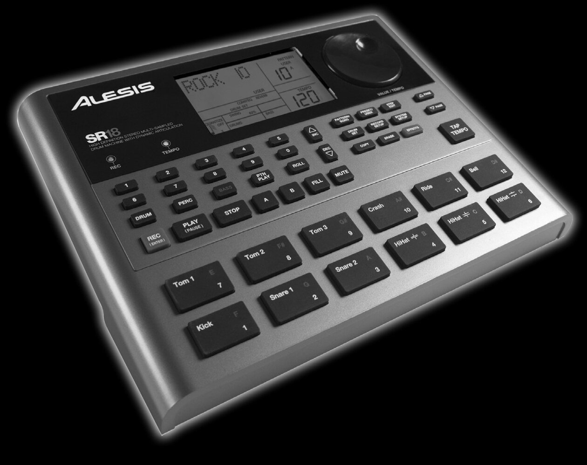
Reference Manual
Introduction
Welcome to the SR18 Drum Machine!
The SR18 includes high-fidelity drum, percussion and bass sounds, and is easy to operate. You can easily switch among the different instrument layers in real-time. As you strike the 12 pads (each of which can be assigned to any of the available sounds), the SR18's on-board sequencer records exactly when you triggered the sounds and the dynamics of your playing. You can play back your sequences and edit them in various ways.
Data can be saved so that it is retained in memory even if the power is turned off. If the memory fills up with drum Patterns and Songs, this data can be saved permanently to MIDI System Exclusive storage devices.
The SR18 also includes a library of Preset Patterns prepared by professional drummers and musicians for those who want to start creating Songs in the fastest and easiest way possible.
Tip: To hear a demo song, hold PATTERN / SONG and press PLAY.
Ground Rules
The SR18 consists of two main elements:
- The drum sounds themselves, recorded in high-resolution multi-sample stereo format. For additional realism, many sounds use advanced "dynamic articulation" techniques so that these sounds, when hit loudly, have a different timbre than when they're hit softly.
- An internal sequencer to control and trigger the sounds.
The Pattern/Song Recording Method
When recording with a drum machine, it's often easier to divide a song into shorter individual Patterns and work on these rather than record an entire song. A typical Pattern might be 8, 16, or 32 beats long, and correspond to a verse, chorus, bridge, instrumental, intro, etc. While recording these Patterns, the SR18 will be in Pattern Mode. The SR18 holds 100 Preset (i.e., can't be edited) Patterns and 100 user-programmable Patterns, each of which can be from 1 to 128 beats long.
After perfecting these Patterns, Song Mode offers two ways to create a song:
- Program a list of Patterns, in the order in which they are to be played.
- Select Patterns in real time, and the SR18 will remember your performance.
The SR18 stores up to 100 User-programmable Songs.
Breaking a song into Patterns saves time since elements of a song often repeat.
Example: The second verse might have the same drum pattern as the first verse. Rather than record the same Pattern twice, simply record one Pattern, then list it twice when assembling a Song. This also saves memory (thus leaving room for more Patterns and Songs) since listing a Song step takes up much less memory than recording a Pattern.
The Two Types of Patterns
The SR18 introduces exciting new Song construction techniques. The SR18 excels at live performance—something usually not associated with drum machines. The key to using these advanced features is to understand the different types of available Patterns.
- Preset Patterns provide a variety of rock, jazz, pop, and other rhythms programmed by professional drummers.
- User Patterns are Patterns you can program, edit, and save. The PRESET/USER button selects between these two master banks of Patterns. It is important to note that the only way to modify a Preset Pattern is to copy it to a User Pattern, where it can be edited.
The Four Types of Sub-Patterns
There are 100 of each type of Pattern, numbered 00-99. However, each numbered Pattern actually contains four different "Sub-Patterns":
- A pair of independent Main Patterns (A and B, selected by their respective buttons).
- A pair of associated Fill Patterns (A Fill and B Fill, selected by pressing the FILL button when either A or B is selected). The Fills primarily provide transitional Patterns between Main Patterns, which makes for more realistic drum parts. The associated Fill Patterns share the same length, Drum Set, and name as their Main Patterns (e.g., if A is 16 beats, A Fill is 16 beats). Otherwise, they are independent.
The reason for pairing the two different A and B Patterns together is simply so that you can switch back and forth between them rapidly in live performance or while improvising. Note that a Pattern's A, B and FILL Sub-Patterns have equal lengths and use the same Drum Set (collection of drum, percussion and bass sounds, as well as effects parameters).
Note that even though there are "only" 100 Patterns, the A and B variations double that to 200 Patterns, and the Fills double that again to 400 Patterns. Added to the Preset Patterns, 800 total Patterns are available.
How "Looping" Simplifies Recording
To simplify recording, a Pattern will "loop" over and over again.
Example: Suppose you want to record an 8-beat pattern. While recording, the pattern will record through all 8 beats, then immediately jump back to the beginning and continue recording through all 8 beats again. The SR18 will remain in record mode, and continue to loop, until you press STOP or switch over to Pattern Play mode. You will hear any previously-played parts as you record new parts. You can also erase drum hits while the pattern is looping to correct for errors.
What's a Voice?
Each of the 12 large pads triggers a voice. A voice is a sound-generating element with several variable parameters: sound assignment, tuning, volume, output assignment (the voice's audio output can go to either one of two sets of stereo outputs, and furthermore, to anywhere within the stereo field of the chosen set of outputs), MIDI note number, etc.
Each pad is velocity-sensitive: the harder you hit the pad, the louder the sound assigned to the pad will play. Thanks to the dynamic articulation techniques mentioned earlier, the timbre will often change as well, just like the way that "real" drum, percussion and bass instruments produce sound when played with different amounts of force.
There are eight levels of pad volume resolution, from soft to loud. However, when using the SR18 as a drum sound expander and triggering sounds via MIDI, they respond to all 127 MIDI volume levels.
Contents
- Introduction
- Connection Diagram
- Top Panel Physical Layout
- Rear Panel Physical Layout
- Display Layout
- Basics
- Recording Patterns
- Pattern Play Mode
- Drum Sets
- Record Setup
- Erase Functions
- Copy / Save Functions
- Transposition
- Pattern Step Editing
- Song Mode
- System Setup
- Applications
- MIDI Implementation Chart
- Factory Reset
- Key Features
- Technical Specifications
- Quickstart Guide
- Pattern, Kit and Sound Lists
Connection Diagram
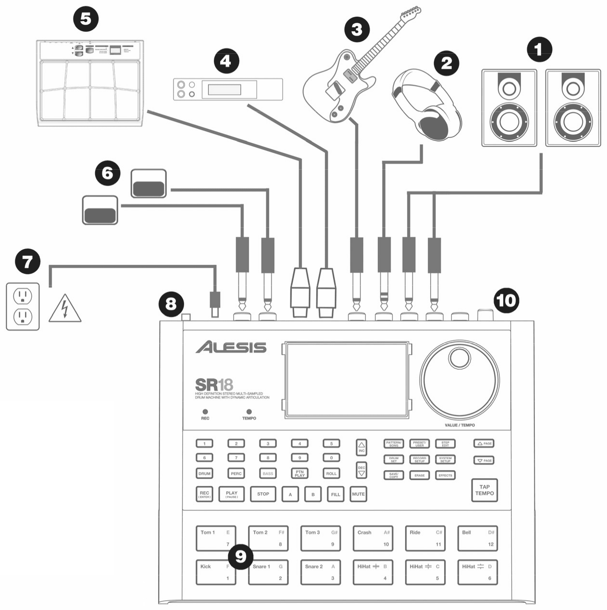
As you hook up the SR18, the volume control on your power amp and the SR18 should be all the way down, and power to both units should be off.
- Plug ¼" TS cables from the MAIN OUTPUTS to an amplifier, mixer, or speaker system. For mono sound, you can connect only one output.
- Alternatively, you can connect a pair of ¼" TRS headphones to the PHONES OUTPUT to practice quietly.
- Connect your instrument to the INSTRUMENT INPUT.
- Connect a MIDI device, such as a sampler or sound module, to the MIDI OUT of the SR18.
- Connect a MIDI device, such as a percussion controller, to the MIDI IN of the SR18.
- If you have ¼" TS footswitches, connect them to the START / STOP and COUNT / A / B / FILL jacks.
- Plug the included power adapter (12V DC 500mA) into the adapter jack and the adapter into a power source. Alternatively, you may choose to power the unit by inserting 6 AA batteries into the bottom compartment.
- Press the POWER switch to turn on the unit.
- Tap the pads to hear sounds. You can switch among the three different sound categories for the pads by pressing the corresponding button (DRUM, PERC, BASS).
- Adjust the volume control on the rear panel to a suitable listening level.
Note that you may also connect the stereo Aux output to a speaker system or amplifier, using a ¼" TRS cable. The SR18 can be set up to output sounds through the Main or Aux connections (Main by default). See "Creating and Editing Drum Sets / Page 12: Output" for more information.
Top Panel Physical Layout
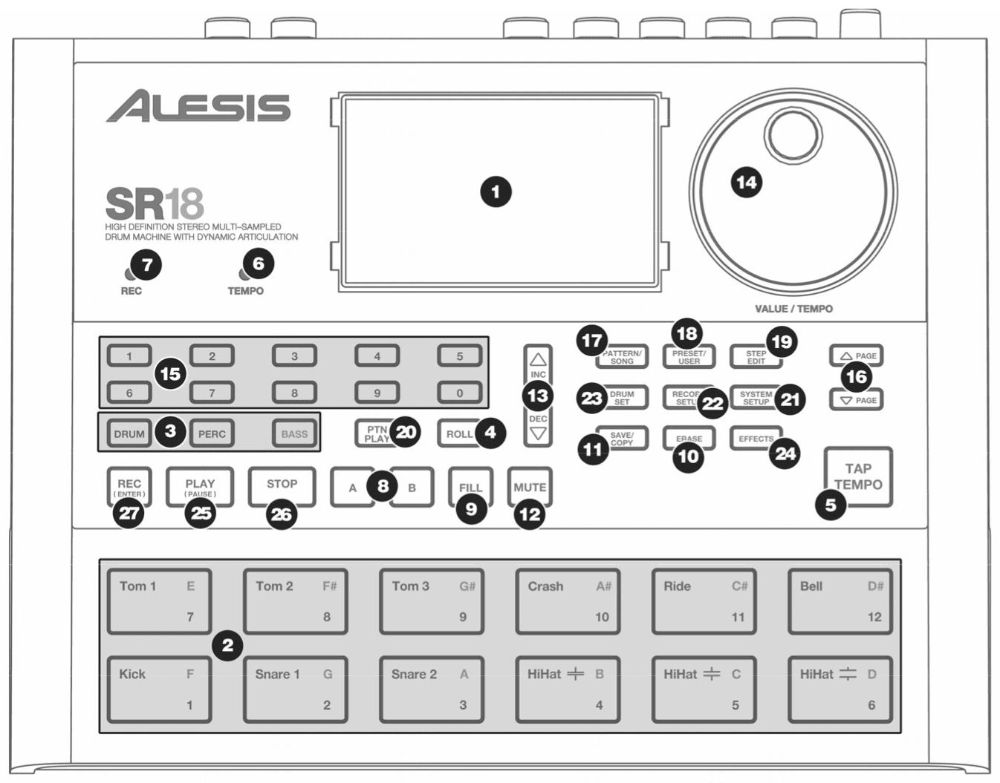
General Controls
- LCD – The display helps you keep track of system parameters and settings as you use the SR18.
- PADS – The 12 pads are used to trigger sounds on the SR18. The pads can address 3 different types of sounds: drums, percussion and bass. To select which sounds are controlled by the pads, press one of the three Pad Play buttons (DRUM, PERC, BASS). In addition, the pads can be used to trigger entire Patterns while in Pattern Play Mode.
- PAD PLAY BUTTONS – These 3 buttons select which sounds are triggered when you hit the pads. Press the corresponding button to control the following sounds with the pads:
- BASS
- Selects the Bass sounds associated with the current Drum Set. In addition, you can hold down this button and use the INC / DEC buttons or the VALUE dial to transpose the bass sounds up or down an octave.
- DRUM
- Selects the Drum sounds associated with the current Drum Set.
- PERC
- Selects the Percussion sounds associated with the current Drum Set.
- ROLL – While programming Patterns, hold down this button and press a pad to create a roll. The roll will last for as long as the pad is being held down. This lets you play a series of drum hits without having to repeatedly press the pads, and is typically used to create steady 16th note hi-hat parts, quarter note kick drum parts, snare rolls, etc. The timing of the roll is specified by the Quantization and Swing settings in the Record Setup menu.
- TAP TEMPO – You can use this button to tap in a tempo. The SR18 will average the time between successive taps and will derive a tempo. You can also change the tempo by holding down the TAP TEMPO button and using the VALUE dial or the INC / DEC buttons.
- TEMPO LED – This LED will blink at a rate equal to the tempo displayed on the screen's bottom right corner.
- REC LED – This LED will light when the SR18 is recording. It will blink when you are required to confirm or cancel an action.
- A & B – Each Pattern consists of two Main sub-patterns – A & B. You can select each of the two sub-patterns by pressing its corresponding button. These sub-patterns allow you to program variation in your Patterns (i.e. sub-pattern A is the verse, sub-pattern B is the chorus).
- FILL – Each Pattern also includes two Fills associated with each of the two sub-patterns. The Fills are used to transition from one sub-pattern to another (i.e. transition from verse to chorus).
- ERASE – This button allows you to erase Patterns or Songs. Hold this button down and the screen will prompt you to verify that you want to erase the selected element. To erase the part, press the REC button while the ERASE button is being held down. In addition, ERASE allows you to erase specific events in real-time as you record your patterns. Simply hold down the ERASE button as the Pattern plays and press the pad corresponding to the sound you wish to erase. Any events assigned to the pad will be erased from the moment the pad is pressed until either the pad or the ERASE button is released.
- SAVE / COPY – This button accesses various save / copy / append functions (see the summary table).
- MUTE – This button allows you to mute a selected instrument layer. Hold down the button and press DRUM, PERC or BASS to mute the corresponding instrument layer. To un-mute the layer, press the corresponding button again while MUTE is being held down.
Navigation Buttons
- INC / DEC – These buttons are used to increment and decrement through values and settings on the SR18.
- VALUE DIAL – This dial can also be used to increment and decrement values and settings.
- NUMBER BUTTONS – Alternatively, you may use the number buttons to input values directly.
- PAGE UP / DOWN – These two buttons are used to go between pages of options when browsing menus and settings.
Mode Buttons
- PATTERN / SONG – This button toggles between the two different modes on the SR18. In Pattern Mode, you can play, record and edit individual patterns. Patterns are short (i.e. 8-beat, 16-beat, etc) rhythm sequences which are assembled together to create Songs. A Song is a sequence of Patterns. In Song Mode, you can perform or program your Patterns to create a Song. The currently-selected mode will be indicated on the display.
- PRESET / USER – This button toggles between Preset and User Patterns. The selected mode will be indicated in the upper right corner of the display.
Preset Patterns provide a variety of rock, jazz, pop and other rhythms programmed by professional drummers and cannot be overwritten or edited (the only way a Preset Pattern can be edited is to copy it to a User Pattern).
User Patterns are Patterns you can program, edit and save as you wish.
- STEP EDIT – Pressing this button enters Step Edit Mode for Pattern or Song editing, depending on which of the two modes is selected. This mode allows you to "step" through your Pattern or Song sequence to correct any mistakes. The display will indicate STEP EDIT while in Step Edit Mode, and the current step will be displayed on the top line. To move through the steps of the sequence, use the PAGE UP / DOWN buttons.
- PTN PLAY – This button enables Pattern Play Mode. In this mode, you can play pre-selected Patterns in a sequence, using the pads to trigger the Patterns in real-time. See "Playing Patterns With the Pads" section.
Setup Buttons
- SYSTEM SETUP – Pressing this button calls up various system settings and preferences, such as MIDI options, note assignments, clocking, as well as display brightness and others. The display will indicate SYSTEM and SETUP when you are in System Setup. You can move between the different pages of settings with the PAGE UP / DOWN buttons and change the settings on the selected page with the VALUE dial or the INC / DEC buttons. To save your settings so they are recalled the next time you boot up the SR18, press the SAVE button while in this menu and then press REC to confirm the save. To exit System Setup, press the SYSTEM SETUP button again.
- RECORD SETUP – Pressing this button calls up various recording settings, such as Quantization, Swing, Pattern Length, Time Signature, etc. The display will indicate RECORD and SETUP while you are in Record Setup Mode. You can move between the different pages of settings with the PAGE UP / DOWN buttons and change the settings on the selected page with the VALUE dial or the INC / DEC buttons. To exit Record Setup, press the RECORD SETUP button again.
- DRUM SET – This button calls up the Drum Set Mode options, where you can select different drum/percussion sounds, bass sounds, change individual pad sounds and modify parameters such as Volume, Tuning, Panning, etc. The display will indicate DRUM SET while you are in Drum Set Mode. You can use the PAGE UP / DOWN buttons to move between the different pages of settings and you can use the VALUE dial or INC / DEC buttons to change the settings on the selected page. When you modify or customize a Drum Set, you will need to make sure that you save it (press the SAVE button, then press REC to confirm) in order to be able to access it later. To exit Drum Set Mode, press the DRUM SET button again.
- EFFECTS – This button calls up the Effects menu, where you can select the effects which are stored and recalled with every Drum Set. These effects include Reverb, EQ / Compression and feature ready-to-use presets. To move between the different pages in the Effects Menu, use the PAGE UP / DOWN buttons. You can use the VALUE dial or INC / DEC buttons to enable and disable the selected effect or to change the displayed settings.
Transport Control Buttons
- PLAY – If the SR18 is stopped, pressing PLAY will play the sequence from the current position. If the SR18 is playing, pressing PLAY will pause the sequence. You can continue playing the sequence from the position where it was paused by pressing PLAY again. In addition, you may use the PAGE UP and PAGE DOWN buttons while the unit is playing to advance to the next Pattern (if one is pending), or start playing from the beginning of the current Pattern (and cancel any pending Pattern), respectively.
- STOP – Press this button to stop the current sequence and go back to the start of the Pattern or Song. Quickly pressing STOP twice sends a MIDI Panic message to the internal voices of the SR18 and to external devices connected via MIDI. A Panic message effectively stops all sounds which may be playing. This is useful in situations where a certain sound may be stuck and will not turn off.
- REC – Press and hold this button before pressing PLAY to initiate recording. The REC button also functions as an ENTER command, when prompted for action by the display (for example, when erasing songs).
Rear Panel Physical Layout
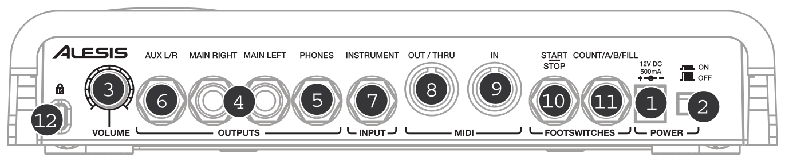
- DC IN – The supplied power adapter should be connected to a live outlet to power the unit. Alternatively, the unit may be powered with 6 AA batteries inserted in the bottom compartment. (Please refer to illustration in compartment for proper battery insertion).
- ON/OFF SWITCH – This switch turns the unit on and off.
- VOLUME – This knob controls the overall volume of the SR18.
- ¼" TS RIGHT / LEFT OUTPUTS – These ¼" connections will output the audio from the SR18. Connect these outputs to an amplifier or a speaker system. For mono sound, you can connect only one output.
- PHONES – Connect headphones to this output for quiet practicing.
- AUX L / R – The SR18 can also output instrument layers through this auxiliary connection. For example, this allows you to output your drum and percussion tracks on separate channels, which can be useful in a recording / tracking situation.
- INSTRUMENT – Connect your instruments (guitar, bass, etc.) to this ¼" input. The input signal will be mixed with the audio from the unit.
- MIDI OUT / THRU – Use a five-pin MIDI cable to connect the MIDI OUT of the SR18 to the MIDI IN of an external MIDI device.
- MIDI IN – Use a five-pin MIDI cable to connect the MIDI OUT of an external device to the MIDI IN of the SR18.
- START / STOP FOOTSWITCH – Connect a ¼" TS footswitch to this input to remotely start and stop playback on the SR18.
- COUNT / A / B / FILL – Connect a ¼" TS footswitch to this input to remotely control pattern playback on the SR18.
- KENSINGTON LOCK – The SR18 may be secured to a table or surface, using this Kensington Lock slot.
Display Layout
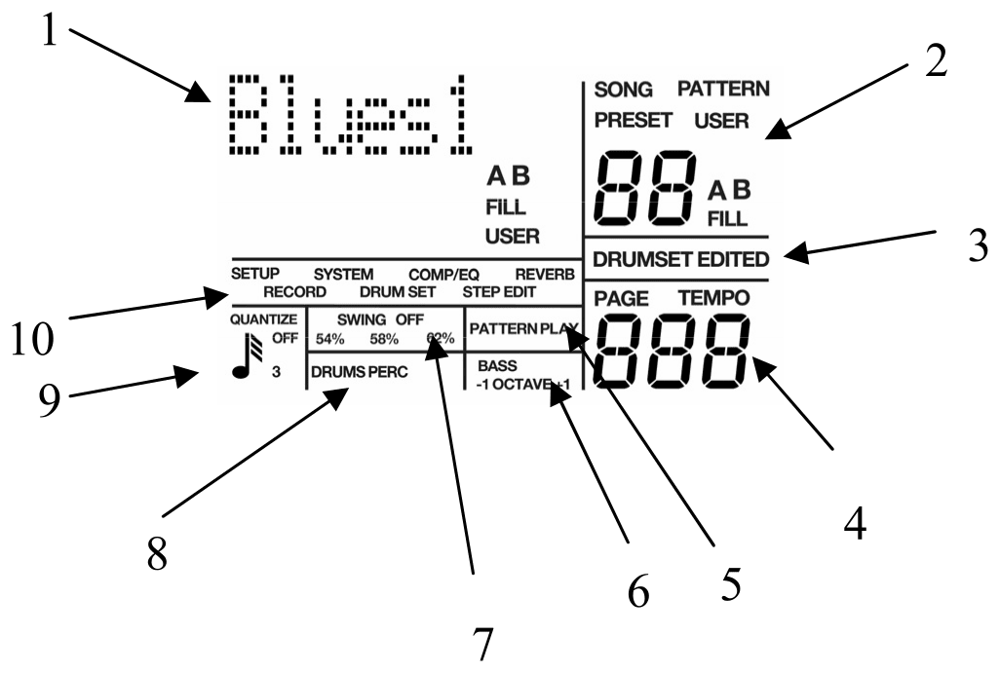
The LCD is divided into several "windows." Each window contains information that helps you monitor the SR18's status, and/or indicates what type of data should be entered.
- Name, "dialog" box, real time Song/Pattern readout, beat counter. This is the most commonly-used area of the display. It shows Pattern and Song names, the beat counter if a Pattern or Song is playing, and the Pattern (including A/B/Fill/Preset or User designators) that is currently playing in Song mode. When acting as a "dialog box," it lists parameters and the value to be edited (e.g., MIDI channel and the channel number).
- Pattern/Song readout (also Drum Set edit and drum pad readout). This shows the selected Song or Pattern number; with Patterns, the A/B/Fill/Preset or User designators are also shown. In operations that require selecting a drum pad, this window displays the drum pad number.
- Drumset Edited indicator. If you have edited a Drum Set to which a particular Pattern was assigned, the display also shows DRUMSET EDITED. This is a reminder that you need to save your changes if you would like to be able to recall them at a later time.
- Page number and tempo display. When stopped or running, this shows the current tempo. For functions that have multiple "pages" of parameters (Record Setup, System Setup, etc), this portion of the display shows the currently selected page number.
- Pattern Play indicator. This segment is lit when in Pattern Play Mode.
- Bass and Octave Transposition indicators. BASS indicates that the pads are controlling bass sounds, while the OCTAVE indicators (+1/-1) let you know whether the sounds are transposed up or down an octave (no indicator will be present when there is no transposition).
- Swing. Shows the current swing rhythm, expressed as a percentage (or OFF if swing is off).
- Drums / Percussion indicator. These indicators let you know which Pad Play Mode is currently selected (i.e. which sounds the pads are controlling, or which instrument layer you are currently editing).
- Quantize. Shows the current quantization setting in standard music notation (or OFF if quantization is off).
- Selected function. Shows which function is currently selected: Drum Set, System Setup, Record Setup, etc.
Throughout the text, button names are shown in UPPER CASE and words that appear on the display are shown in BOLD. When referring to a numbered step in a set of steps, the step number will be in parenthesis—for example, step (4)—to prevent confusion with Song steps or step edit mode.
Basics
How to Communicate with the SR18
The Cursor
When the SR18 wants you to enter a number in the "Dialog" box, the display will show the previously-entered number (or the default number), and the first digit will have a small underline called the cursor. If the cursor is not present, the number is there for reference only. You are expected to enter something only if the cursor is present.
The INC / DEC Buttons
The two small buttons with the up arrow and down arrow symbols (next to the number keys) are called the INC / DEC buttons respectively.
Pressing the INC button once increases the value of the entire number indicated by the cursor (not just a single digit) by one. Pressing the DEC button once decreases the value of the entire number indicated by the cursor (not just a single digit) by one.
Example: If the display shows 00 and you want to enter 01, tap the INC button once.
These buttons, as well as the PAGE buttons, also have a "scroll" feature. If you press and hold a button, after a short pause the display will either increment or decrement at a rapid rate.
The VALUE dial
In addition to the INC / DEC buttons, you may also use the large VALUE dial to quickly increment and decrement through values and settings. Turn the dial clockwise to increment through the available values, or turn the dial counter-clockwise to decrement.
The NUMBER buttons
The number buttons (0-9) can also be used to directly input values into the SR18. Please note that when using the number buttons it is important to enter leading zeros, if necessary. If a value to be edited is a two-digit number, you must enter a two-digit number. If the number is a three-digit number, you must enter a three-digit number. If necessary, enter a leading 0 (i.e., a zero at the beginning of the number) to fill out the required number of digits.
Example: The beat length is a three-digit number. To enter a beat length of 16, enter 016.
Automatic Revert
This feature may confuse you at first, but will save you from potential problems as you become more familiar with the machine. If all the required digits of a number aren't entered within two seconds, the display will revert back to the previous number, with the cursor under the first digit of the previous number. This is handy because if you start to enter a new number, but then change your mind halfway through, you don't have to key in (or remember) the original number again—just wait two seconds, and the display will revert to the original setting.
Buttons that Toggle
Some buttons (SYSTEM SETUP, RECORD SETUP, PATTERN/SONG, PRESET/USER, EFFECTS) "toggle" between two states. Each button press sets the switch to its alternate state.
Example: Press the PATTERN/SONG button once to change from Pattern to Song; press again to change from Song to Pattern.
Example: Press RECORD SETUP to call up the Record Setup menu; press RECORD SETUP again to exit the Record Setup menu.
10 Steps to Instant Gratification (Setup and Checkout)
- Connect the Main outputs (either left or right for a mono monitoring system, or both for stereo) to a musical instrument amplifier, PA, or plug headphones into the headphone output on the back of the SR18. The amp and SR18 volume control (on back) should be all the way down (counter-clockwise).
- Leave the MIDI OUT jack (rear panel) disconnected for now.
- Plug the SR18's AC adapter into the wall. The smaller plug inserts in the 12V DC Power jack on the back.
- Turn on the rear panel ON/OFF switch, and then turn on the amplifier.
- The LCD will illuminate. The upper right of the display should say PATTERN and not SONG; if it shows SONG, press the PATTERN/SONG button so the display shows PATTERN.
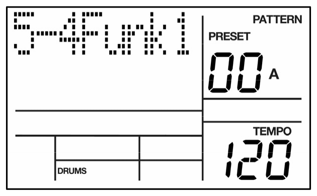
- Start hitting the pads. Adjust the volume control for a comfortable listening level, and check out the sounds.
- Try pressing one of the Pad Play Mode buttons (DRUM, PERC, BASS) to access the different instrument layers and play the pads.
- To hear the built-in demo, hold down the PATTERN/SONG button and press PLAY. To stop the demo, press STOP. If you want to play along with the demo, feel free to bash away on the pads.
- To hear a Preset Pattern, stop the SR18 and press the PRESET / USER button to select Preset Patterns (the display should show PRESET). Then, press PLAY to hear the Preset Pattern.
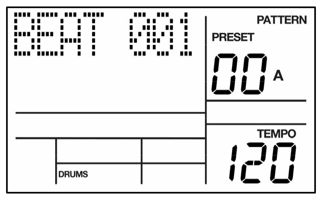
- Try the following:
- While in Preset Patterns, enter a two-digit number between 00-99 using the number keys, then press PLAY.
- Press the INC button to select the next higher-numbered Preset Pattern. It will play at the end of the current Pattern.
- Press the DEC button to select the next lower-numbered Preset Pattern.
- Press the B button to select the B variation of the selected Pattern.
- Press the A button to select the A variation of the selected Pattern.
- Press FILL briefly while a Main (A or B) Pattern is playing. Note how the Main Pattern switches from either A to B or B to A after the Fill has played.
- Press FILL and hold it down until after the Fill has played. If the FILL button is held down past the next downbeat, the Fill's associated Main Pattern (A or B) continues to play rather than switch from A to B or B to A.
- Hold down TAP TEMPO and use the VALUE dial (or INC / DEC buttons) to change the tempo.
The Instrument Layers
The SR18 allows you to play three different kinds of sounds with the pads. These sounds are available in three different Play Modes or Banks. These are DRUM, PERC and BASS and are accessible by pressing the corresponding button on the top panel.
- DRUM
- This Pad Play mode allows you to play up to twelve Drum sounds with the pads.
- PERC
- This Pad Play mode allows you to play up to twelve Percussion sounds with the pads.
- BASS
- This Pad Play mode allows you to play up to 3 Octaves of a key-mapped bass sample(s) on the pads. To transpose the bass sounds, press and hold the BASS button and then use the INC / DEC buttons or VALUE dial to transpose up or down an octave.
Playback / Record Basics
Using the Transport Controls
To stop playback and go back to the beginning of the current Pattern or Song, press the STOP button.
Press PLAY to play the Pattern or Song from the current location. Press PLAY again while a Pattern or Song is playing to pause it. Press PLAY to continue playing the Pattern or Song from the location where it was paused.
Preset and User Patterns
There are two types of Patterns in the SR18.
- Preset Patterns provide a variety of styles, and other rhythms that feature drums, percussion and an accompanying bassline. Note that the only way to modify a Preset Pattern is to copy it to a User Pattern, where it can be edited.
- User Patterns are Patterns you can program, edit, and save.
The PRESET / USER button selects between these two banks of Patterns.
Playing Patterns
- To play Patterns, the SR18 needs to be in Pattern Mode. To do this press the PATTERN / SONG button, which toggles between the two modes. The display will show PATTERN in the upper right corner when the SR18 is in Pattern Mode.
- Select a Pattern you wish to play with the INC / DEC buttons or the VALUE dial.
- To play the selected Pattern, press the PLAY button.
Selecting the Next Pattern to be Played
While a Pattern is playing, you can select to go to another pattern in several ways:
- Use the INC / DEC buttons or VALUE dial to select the next Pattern. The newly-selected Pattern will play back as soon as the current Pattern plays through its entire length. The display shows the Pattern to be played next.
- Enter the two-digit Pattern number with the number buttons. If an A Pattern is currently playing, the new Pattern number will play the A variation. If a B Pattern is currently playing, the new Pattern number will play the B variation. You can also enter a two-digit Pattern number followed by A or B or PRESET / USER to call up an A or B or Preset or User Pattern, regardless of the Pattern that is currently playing.
Selecting Individual Patterns
- Make sure the SR18 is in Pattern Mode.
- Enter a two-digit Pattern number (remember to enter a leading 0 if necessary).
- Press the A button to select the A Main Pattern, or B to select the B Main Pattern. To select a Fill Pattern, first select the desired Main Pattern (A or B) then press the FILL button.
- Press PRESET/USER to select either a Preset or User Pattern.
- When a Main Pattern reaches its end, it will loop back to the beginning and continue playing from that point unless you select a new Pattern, select a Fill Pattern initially, or stop the Pattern.
If you select a User Pattern that contains no data, the display says EMPTY PATTERN. If you select a User Pattern that contains data but has not yet been named, the display says NO NAME.
Notes
- If you change your mind or select the wrong Pattern, you can select a new Pattern number at any time before the next Pattern begins.
- If you press STOP before the next Pattern begins playing, the SR18 will stop and remain on the currently selected Pattern.
- To immediately jump to the next Pattern in the sequence, press the PAGE UP button.
- To immediately return and begin playing from the start of the current Pattern, press PAGE DOWN.
Changing Pattern Tempo
The tempo range extends from 30 to 300 beats per minute. Tempo can be changed while the SR18 is stopped or running. There are two ways to set tempo.
- Before playing a Pattern, tap the TAP TEMPO button several times at the desired tempo. The SR18 will average the time between taps and derive a tempo; the display will update the tempo with each tap. If a footswitch is plugged into the Count/A/B/Fill jack, tapping the footswitch at the desired rate is equivalent to tapping the TAP TEMPO button.
- Hold down the TAP TEMPO button and turn the VALUE dial to select a new tempo. Alternatively, you can use the INC / DEC buttons while holding down TAP TEMPO to increase or decrease by 1 BPM, or hold down to scroll through the tempo values.
Note that you can customize how the SR18 deals with tempo. In the System Setup pages (page 9), you can specify whether the SR18 will follow the tempo associated with each Pattern or whether the unit will follow a global tempo setting, ignoring any tempo data associated with the Patterns.
Selecting Fill Patterns
Fill Patterns are the key to creating expressive drum parts. However, Fill is a sophisticated feature that requires some explanation.
- Fills are always the same length, and use the same Drum Set, as the associated Main Pattern. This lets you "drop in" a Fill at any time. As soon as you press the FILL button, the Fill takes over from the Main Pattern and starts playing until the end of the Fill.
- Fills are transitional Patterns.
Example: Suppose an 8-beat A Main Pattern is playing and you press the FILL button on beat 4. The A Fill Pattern will play the last 4 beats and then automatically transition into the B Main Pattern.
- Conversely, if B Main is playing and you press Fill, after B Fill has played, the SR18 will transition to the A Main Pattern. You can select the Fill at any time while the Main Pattern is playing. However, Fills do not have to be transitional Patterns. If you press the FILL button (or footswitch) before the Fill has finished playing and hold it down until after the Fill has played (i.e., past the downbeat of the next Pattern), the SR18 will return to the original Main Pattern.
Example: Suppose an 8-beat A Main Pattern is playing and you press the FILL button on beat 4 but hold it down past beat 8. The A Fill Pattern will play the last 4 beats, then the SR18 will return to the A Main Pattern.
- Fills cannot start on the downbeat since a Fill, by definition, starts at some point into the Main Pattern. However, anything you record on the Fill downbeat will play on the first downbeat following the Fill (i.e., the downbeat of the next Pattern). To show why this is a useful feature, consider that when coming out of a fill, you'll often want to hit something like a cymbal crash on the downbeat of the next Pattern yet not have that crash repeat every time the Pattern plays. This way of handling Fills lets the downbeat cymbal crash be part of the Fill instead of the Main Pattern.
- A footswitch plugged into the Count/A/B/Fill jack duplicates the FILL button function when playing Patterns in Perform mode.
Background: This way of handling Patterns explains the logic behind having A, B, and Fill Patterns. In typical pop tunes, A would be the verse and B the chorus. A Fill provides the Fill that transitions from verse to chorus, and B Fill provides the Fill that transitions from chorus to verse. Thus, one of the numbered Patterns may be all you need to put together a tune. This structure makes it possible to put together songs in minutes using the Preset Patterns. It also makes it easy to play drum parts live. For example, if there's a solo happening over the A Main Pattern, you can keep the Pattern repeating until the solo is about to end, at which point you select the Fill that leads out of the A Main Pattern.
Using the Start/Stop Footswitch
When the SR18 is stopped, pressing a footswitch plugged into the Start/Stop footswitch jack is equivalent to pressing PLAY. When the SR18 is running, pressing the footswitch is equivalent to pressing STOP.
Background: The rear panel Start/Stop footswitch jack accepts a momentary, normally open or normally closed footswitch (available at most music stores) for remote or foot control of the stop and start functions. The SR18 checks the footswitch on power-up to determine whether it is normally open or normally closed, so make sure the footswitch is plugged in (and you're not pressing it down) when you turn on power.
The ROLL Button
While playing and recording Patterns, the ROLL button is used to create a series of notes at the desired quantization rate, as described in the section 'RECORD SETUP'. Rolls can be played live and can be recorded into a Pattern during real time playing.
Using Roll
The Roll function triggers a drum sound at the current swing value and quantization rate (e.g., eighth notes, 16th notes, etc.; if quantization is off, though, this function is inactive). This lets you play a series of drum hits without having to repeatedly press the pads, and is typically used to create steady 16th note hi-hat parts, quarter note kick drum parts, snare rolls, etc.
Press a pad on the first beat of what will be a series of hits and hold it down. Immediately after pressing the pad, press and hold the ROLL button. The drum will be retriggered at the current quantization rate for as long as the pad and ROLL button are held down. All hits will be at the same volume as the first pad hit.
The MUTE Button
The MUTE button can be used to mute the different instrument layers while the SR18 is playing.
To Mute Parts:
- Play a Pattern.
- Press and hold the MUTE button.
- Press one of the Instrument buttons (DRUM, PERC or BASS). That particular instrument sound will be muted.
- To un-mute the instrument layer, press the corresponding button (DRUM, PERC, BASS) while holding down MUTE.
Playing Songs
- To play a Song, press the PATTERN / SONG button until SONG is displayed in the upper corner of the screen.
- Select the Song you want to play with the INC / DEC buttons or the VALUE dial.
- After you select the Song press the PLAY button.
- To stop playback, press the STOP button.
Recording Patterns
Note: An empty Pattern defaults to an 8 beat length (2 Bars), with 16th note quantization and swing off (50%). If you need to change the length, it is best (though not essential) to do so before recording. Other parameters can be changed while you're recording.
Steps to Recording a Pattern
- First, begin by selecting User Patterns (the display should indicate PATTERN and USER).
- Next, select an empty User Pattern with the INC / DEC buttons or the VALUE dial (the display should show EMPTY PATT).
- Press the REC and PLAY buttons simultaneously. The SR18 will begin recording.
- Play the sounds on the pads. As you record, the display will show the current beat number.
- The Pattern will "loop" during the record process so that you can overdub different drums on different passes.
- To stop recording, press STOP.
- Press PLAY to audition the Pattern from the beginning.
When recording your pattern it's a good idea to locate the drum set that you want to use for the pattern ahead of time. You can change this later. For instructions on selecting a Drum Set, see the section 'SELECTING, EDITING AND CREATING DRUM SETS'. Note that a Drum Set is a collection of sounds such as the Drums, Percussion and Bass sound. Therefore, if you would like to change the Bass sound in a Pattern, for example, you will need to modify the Drum Set to contain a different bass instrument.
Note: Instead of playing on the pads, you can also record remotely by sending MIDI notes to the SR18. Make sure that the MIDI device you are playing has settings that correspond to the SR18's sounds (MIDI Channel and note numbers).
Note: When sending MIDI data into the drums when the SR18 is not recording (i.e., the SR18 serves as a drum sound expander module), the drum sounds respond to 127 different levels of dynamics. However, if MIDI is used as a trigger during the recording process, the Pattern will "quantize" the incoming level to the nearest of eight levels—the same eight levels produced by tapping the pads at various levels.
Practice Mode
If you want to practice your beat with a metronome (the SR18 only plays the metronome when recording) you can use Practice Mode. While in Pattern Mode (User Patterns should be selected), press the REC button and you will hear the metronome sound, but the SR18 will not record what you play on the pads.
Recording Other Parts (Percussion and Bass)
After recording your Drum part (or if you want to start with a different part) you may want to add more instruments to your Pattern's arrangements.
To record a Percussion or Bass line to your Pattern:
- Press the PERC or BASS button and play the sounds on the pads in the same manner as the DRUM mode. The BASS mode will have a pitched sample that will play across the pads (the notes corresponding to each pad are indicated in the upper right corner of the pad).
- Press the REC and PLAY buttons. The Pattern will start recording. Play your bass or percussion part.
- Press STOP when completed.
Pattern Play Mode
Pattern Play mode allows you to play sequences of Patterns by triggering Patterns with the pads. To enter Pattern Play Mode, press the PTN PLAY button.
Playing Pattern Sequences with the Pads
- Press the PTN PLAY button.
- Press a pad and the Pattern associated with the pad will begin playing. As the Pattern reaches its end, it will continue to loop from the beginning.
- Now press a different pad. The Pattern associated with the pad will begin playing as soon as the previously selected Pattern reaches its end.
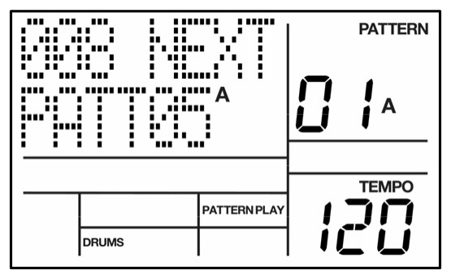
Recording Pattern Sequences into a Song
- Press the PATTERN / SONG button to get into Song Mode (the display should indicate SONG in the upper right corner).
- Press the PTN PLAY button.
- Press REC and PLAY simultaneously to begin recording.
- Press the pads to trigger the sequence of Patterns you wish to record. You can also trigger the A, B or FILL parts of the selected pattern.
- Press STOP when you are finished.
Note that you can only record a Pattern Play sequence into an empty Song. Make sure that you select an empty Song or erase an existing song prior to recording.
To listen to the sequence you just recorded in Pattern Play Mode:
- Press the PATTERN / SONG button to get into Song Mode (the display should indicate SONG in the upper right corner).
- Press PLAY to play the recorded sequence.
Assigning Patterns to the Pads
- Press the PTN PLAY button to get into Pattern Play Mode.
- Press the PAGE UP button. The display will show the last pad which was pressed and the pattern number to which it is assigned.
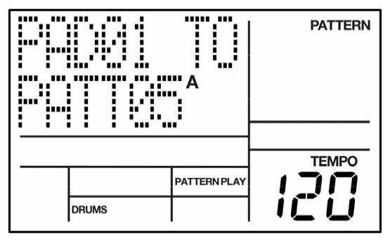
- Press the pad you wish to modify. The pad number will be displayed on the top line.
- Use the INC / DEC buttons, the VALUE dial or the number buttons to choose the Pattern assignment for the selected pad. The assigned Pattern will be displayed on the bottom line.
- You can also press A or B to choose whether the selected pattern's A or B part will be played when the pattern is triggered.
- Press another pad to select it and then adjust the Pattern assignment in a similar fashion.
- After you have assigned the pads press the PTN PLAY button to exit the assignment mode.
Drum Sets
What is a Drum Set?
The SR18 features different "sets" of sounds which you can use in your Patterns and Songs. A Drum Set is a collection of settings that affect the Drums, Percussion and Bass sounds within the set as well as the mix parameters and effects setup. The SR18 includes 100 Preset and 100 User Drum Sets. Note that edited Preset Drum Sets may only be saved in a User Drum Set location. Each Drum Set includes the following:
- DRUM / PERCUSSION SOUNDS – These are the drum and percussion sounds which are loaded when the Drum Set is recalled.
- BASS SOUNDS – This is the Bass sound which is loaded when the Drum Set is recalled.
- PAD PARAMETERS – These are the pad and parameter settings associated with the Drum Set. These settings include volume, panning, tuning, filter, etc.
- EFFECTS SETTINGS – These are the effects settings which will be recalled the next time that the Drum Set is selected and include Reverb, EQ, and Compression.
Selecting a Drum Set
- Press the DRUM SET button.
- The currently selected Drum Set's name is displayed on the top line and the set number is shown on the bottom line. To select the drum and percussion sounds to be used with this set, press the DRUM or PERC button. To select the Bass sounds to be used with this set, press the BASS button.
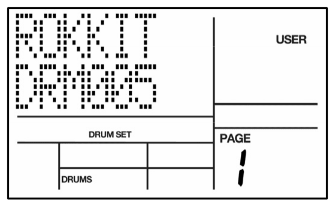
- Enter the desired Drum Set number (from 00 to 99) with the number buttons, INC/DEC buttons or the VALUE dial. (With the number buttons, enter a leading zero if necessary).
Note: User Patterns will remember the selected Drum Set assignments. Preset Patterns have fixed Drum Set assignments; if you exit from the Preset Pattern, the SR18 will forget any assignment you made.
Creating and Editing Drum Sets
The SR18's 12 pads can be assigned to various drum sounds, with different levels, tuning, panning, triggering mode, output jack assignment, etc. Each set of pad parameters is given a number and collectively called a Drum Set. Drum Set assignments have their own dedicated memory and can be thought of as equivalent to the "programs" or "patches" found in synthesizers. Note that A and B User Patterns share Drum Set assignment.
Note that if you edit a Drum Set, any Pattern using that Drum Set will be affected.
General instructions for Drum Set creation are:
- Press the DRUM SET button.
- Use the PAGE (UP and DOWN) buttons to select different "pages" of functions; the display's lower right window shows the page number. The Drum Set pages are described below.
- Select the instrument layer which you would like to edit (drums, percussion, bass) by pressing the corresponding button.
- Adjust values on pages, if necessary, as described for each page.
- After making all needed changes, save the Drum Set if desired (see 'Saving Your Drum Sets' section), then press DRUM SET again to exit.
Note: To select sounds for the Perc or Bass section of the kit, press the corresponding button for these sections and then edit the parameters the same way you would for the Drums.
Page 2: Instrument Layer Volume
This page allows you to adjust the volume of each instrument layer (drums, percussion, bass). Adjusting this level will affect all the sounds in the selected layer.
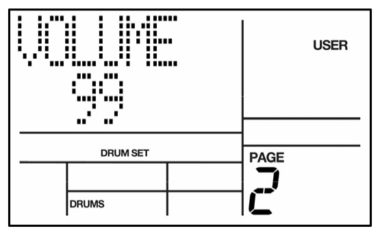
To adjust the volume of an instrument layer:
- Select the instrument layer which you would like to edit by pressing DRUM, PERC or BASS.
- Adjust the overall volume with the INC / DEC buttons, the VALUE dial or the number buttons (99 = MAXIMUM VOLUME, 0 = OFF).
Page 3: Assigning Sounds to Pads
You can assign any of the SR18's sounds to any of the pads, or to more than one pad. Each individual Drum Set can have its own drum sound assignment. However, please note that Bass sounds can only be selected as a group (i.e. you cannot assign different Bass sounds to different pads). The sound numbers are in the Sound List.
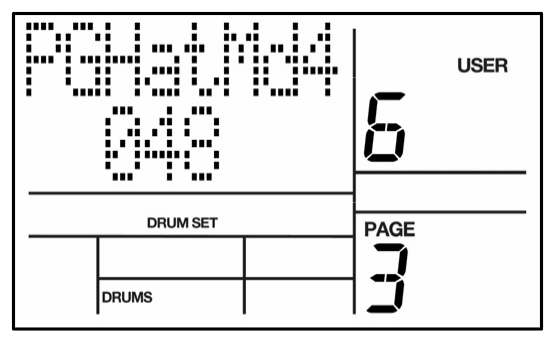
To assign a sound to a pad:
- Select the instrument layer which you would like to edit by pressing DRUM, PERC or BASS. (Note that Bass sounds can only be modified as a group).
- Press the pad (the display will show the pad number in the upper right corner and the name of the sound assigned to the pad on the top line).
- Enter the desired sound number with the number buttons, the INC / DEC buttons or the VALUE dial. When using the number buttons, enter a leading zero if necessary.
Page 4: Pad Volume
Each pad's volume can be adjusted on this page.
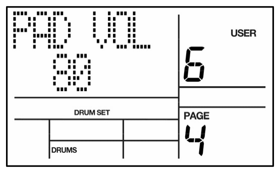
To change a pad's volume:
- Select the sound set which you would like to edit by pressing DRUM or PERC. Note that this parameter is not available for Bass sounds. The volume of the Bass sounds can only be adjusted as a group (see "Instrument Layer Volume" above).
- Press the pad (the display will show the selected pad number in the upper right corner and the volume setting for the pad on the top line).
- Enter the desired volume, from 00 (off) to 99 (maximum volume), with the number keypad, INC / DEC buttons or VALUE dial.
Page 5: Panning
Each pad can also be assigned to one of seven positions within the stereo spectrum.
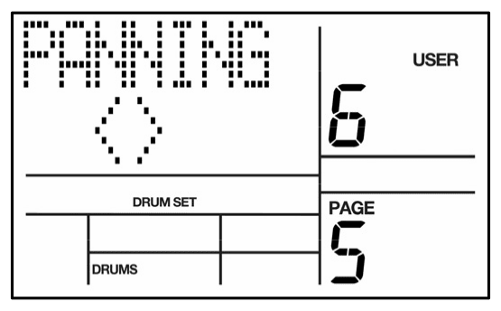
To change a pad's panning position:
- Select the sound set which you would like to edit by pressing DRUM, PERC or BASS. Please note that the Panning setting will affect all Bass sounds similarly. In other words, changing one Bass pad's Panning setting will affect all the other Bass sounds in the Drum Set.
- Press the pad (the display will show the pad number and the pad's panning position on the top line).
- Enter the desired pan position, from full left to full right, using the number keypad, INC/DEC buttons or VALUE dial. The seven available pan positions correspond to the number buttons shown in parenthesis: hard left (1), soft left (2), left of center (3), center (4), right of center (5), soft right (6), and hard right (7). The display will show <> when panning position is center.
Background: The SR18 has two pairs of stereo outputs. Drum sounds can be assigned to either pair of outputs (see page 12 of the Drum Set menus), and be placed anywhere within the stereo field of the assigned outputs via the pan function.
Page 6: Tuning
Each pad's tuning can be adjusted in increments of +/- 1 semitone (+/- 12 semitones maximum).
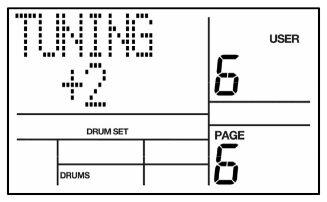
To change a pad's tuning:
- Select the sound set which you would like to edit by pressing DRUM, PERC or BASS. Please note that Bass sounds cannot be transposed individually, only as a group. In other words, transposing one Bass note will transpose all other Bass sounds by the same value.
- Press the pad (the display will show the selected pad number in the upper right corner).
- Enter the desired tuning with the INC/DEC buttons or the VALUE dial. The range is from +12 (most sharp) to 0 (normal pitch) to -12 (most flat).
Page 7: Attack Envelope (Bass Only)
The attack envelope (bass only) affects how the bass sound will play after you hit the pad. Attack determines the amount of time it takes for the bass sound to "fade in" after it has been triggered. With longer attack times, it takes longer for the sound to reach full volume after it has been triggered.
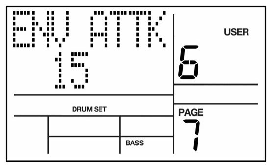
Note that the Attack setting cannot be set individually per pad. In other words, changing the Attack setting will affect the Attack setting for all pads in the Bass group.
To change the Bass attack envelope:
- Select the Bass group by pressing BASS.
- Enter the desired Attack setting for the sound, using the number buttons, INC/DEC buttons, or VALUE dial.
Page 8: Decay Envelope
The Decay envelope is available for all Pad Play Modes (Drums, Perc, Bass) and affects the amount of time before the sound stops ringing out. This allows you to get the effect of a deep drum sound that will decay over a specific period, or with a short decay time, a short staccato hit.
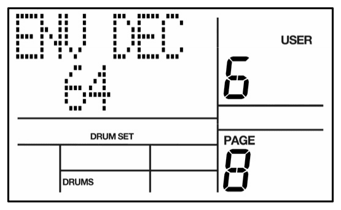
To change a pad's decay envelope:
- Select the sound set which you would like to edit by pressing DRUM, PERC or BASS.
- Press the pad (the display will show the pad number).
- Enter the desired Decay amount for the sound, using the number keypad, INC/DEC buttons, or VALUE dial.
Note: Setting the decay envelope to 0 allows you to sustain the selected sample for as long as the corresponding pad is held down.
Page 9: Release Envelope (Bass Only)
The Release envelope parameter (bass only) describes the amount of time that it takes for the bass sound to "fade out" after you release the pad.
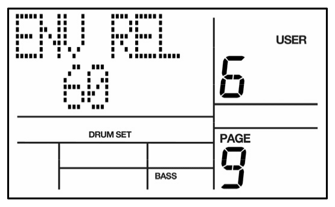
Note that the Release setting cannot be set individually per pad. In other words, changing the Release setting will affect all pads.
To change a Bass pad's Release envelope:
- Press the pad (the display will show the pad number).
- Enter the desired Release amount for the sound, using the number keypad, INC/DEC buttons, or VALUE dial.
Page 10: Filter
Pad Filter allows you to make changes to the tonal characteristics of a sound by removing the higher frequencies from the sound. This allows you to make a particular drum sound darker, with more pronounced bass. The higher the value the more high frequencies will be allowed to pass through. The lower values will cut off the higher frequencies of the sound in a more pronounced fashion, resulting in a more muted sound.
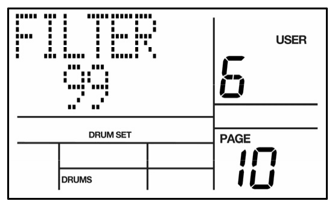
To change the filter setting associated with a given pad:
- Select the sound set which you would like to edit by pressing DRUM, PERC or BASS.
- Press the pad (the display will show the pad number).
- Enter the desired filter amount, using the number keypad, INC/DEC buttons or the VALUE dial. (Remember that lower values will result in a duller, more muted sound.)
Page 11: Triggering Mode (ASN MODE)
Background: Each mode affects triggering in a different way:
- Multi
- When hitting a pad repeatedly, each hit will cause the sound to go through its entire decay. This is useful with cymbals, since early strikes will continue to decay as you play later strikes.
- Single
- When hitting a pad repeatedly, a new hit will automatically terminate any sound that is still decaying. This is useful with many percussion sounds (such as tambourine, agogo, etc.).
- Group 1 through 8
- Pads assigned to a particular group (1 through 8) will cut each other off if a group pad is struck while another pad assigned to the same group continues to sound. The classic use of this is with hi-hats; a closed hi-hat will cut off an open hi-hat, and hitting an open hi-hat sound will cut off a closed hi-hat.
The SR18 can play up to 32 voices at a time, so it's possible to run out of voices if you play a flurry of notes and have lots of pads in the Multi assign mode. If 16 sounds are playing and you ask the SR18 to play another one, the sound that's closest to finishing its decay cycle will be "stolen" so that the most recent sound can be played. In practice, it's difficult (and usually not artistically desirable!) to create drum parts so complex that voice-stealing becomes a problem. However, if this is a problem, try assigning all the toms to a group so that they only require one voice at a time.
The display shows ASN MODE (short for Assignment Mode), the currently selected pad number, and the mode assigned to that pad.
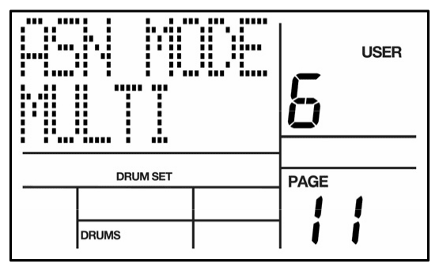
To change the mode associated with a given pad:
- Select the sound set which you would like to edit by pressing DRUM, PERC or BASS.
- Press the pad (the display will show the pad number in the upper right corner).
- Enter the desired mode with the INC/DEC buttons, the number keypad (buttons 1-4) or the VALUE dial.
Page 12: Output
Background: The SR18 includes two independent stereo output pairs (Main and Aux). You can direct any pad to either output pair, and pan the sound within the selected output's stereo field (see page 5 of the Drum Set menus). This allows several output assignment options:
- Mono
- Plug into one of the output pair jacks; the SR18 is smart enough to know that plugging in one plug means you must want mono. Any pan settings are ignored. Do not plug into both outputs, or stereo will be activated.
- Stereo with Fixed Placement
- Plug the left Main output into the left channel of your amp (or mixer), and the right Main output into the right channel. The default voice mix for the preset Drum Sets pans the drums between the Main output jacks in a way that works well for most applications.
- Stereo with Variable Placement
- Plug the left Main output into the left channel of your amp (or mixer), and the right Main output into the right channel. With the User Drum Sets, you can pan the drums between the Main output jacks as desired.
- Separate Percussion/Drum Outputs
- Standard drum kit sounds can be spread in stereo and assigned to the Main outputs, with percussion sounds spread in stereo and assigned to the Aux outputs. Run the outputs to a mixing console or computer audio interface, and you can treat the drum kit and percussion sounds as two sub-mixes. This technique might also be useful if you're recording the part on your DAW or disk recorder; feed the drums to two tracks, and the percussion to two other tracks. Adjust the balance between the two in the mix, or fade the percussion in and out independently of the trap drum sounds. Or, process the two groups individually.
By default, pad sounds are output through the Main connections on the rear of the unit. However, you also have the option of outputting individual pads through the Aux connection. Please note that the Bass sounds can only be output as a group; in other words, all Bass sounds will either be output through the Main or Aux connections.
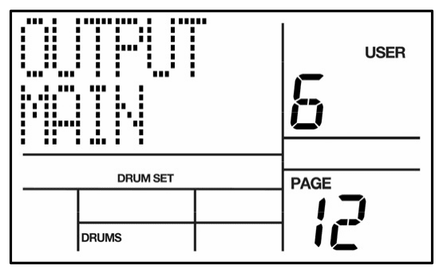
To change a pad's output assignment:
- Select the sound set which you would like to edit by pressing DRUM, PERC or BASS.
- Press the pad (the display will show the pad number).
- Use the INC/DEC buttons, VALUE dial or number buttons (1 chooses the Main output pair, 2 selects the Aux output pair).
Page 13: Drum Set Name
On this page you can assign a name to your Drum Set. Please note that only User Drum Sets can be named, renamed and saved. If you wish to edit and rename one of the Preset Drum Sets, copy it to a User location first.
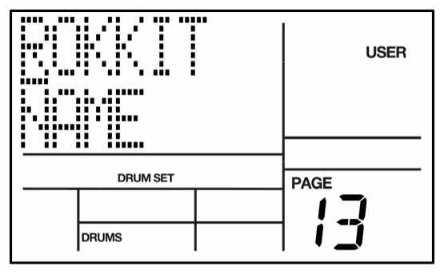
To name the selected Drum Set:
- You will see the cursor underneath the letter which is currently selected. Use the INC / DEC buttons or the VALUE dial to change the letter above the cursor.
- Use the PAGE UP / PAGE DOWN buttons to move the cursor. PAGE UP moves the cursor forward, while PAGE DOWN moves the cursor backwards (or goes back to the previous menu page if the first letter is selected).
Effects
The Effects settings are stored per kit. Each Kit can have separate Reverb, Compression / EQ settings that are specific to that kit. To change Effects settings, press the EFFECTS button while you are in Pattern Mode. Effect settings can only be changed on User Patterns. In order for the Effects settings to be remembered you must save the Drum Set after you make your settings.
The Effects selection and settings are similar to the Record Setup and Drum Set modes. After you press the EFFECTS button, you will be taken to the first page. To move between the different pages and parameters, use the PAGE UP / DOWN buttons. The current parameter value can be changed with INC / DEC buttons, the number keypad, or the VALUE dial. Note that you can turn Effects on and off on a per pad basis.
Page 1 / Reverb Type
There are several Reverb types you can choose on this page. You can select the Reverb type for the selected Drum Set by pressing the INC/DEC buttons or using the VALUE dial.
Page 2 / Reverb Send Amount
You can determine the send amount by pressing the INC/DEC buttons or use the VALUE dial. This affects how much "wet" signal is mixed with the original "dry" signal. The more "wet" the signal is, the more reverb effect you will hear. Press a pad to select it, then choose how much Reverb you would like to apply to the corresponding sound.
Page 3 / EQ and Compression Type
There are several types of EQ and Compression curves. These settings will affect the sound of your drumset to accentuate certain frequencies as well as loudness settings. You can select EQ and Compression curves with the INC / DEC buttons or the VALUE dial.
Note: For EQ and Compression there is no send parameter.
Page 4 / EQ and Compression ON / OFF
This page allows you to enable and disable the EQ from the signal chain. Press a pad to select it and use the INC / DEC buttons or the VALUE dial to select whether you would like to enable EQ and Compression.
| Reverb types | Compression and EQ types |
|---|---|
| Off, AmbBrite, BdSpring, BigGate, CloseMic, FxGate, HugeSpac, LgSpacy, Md80sRm, MdHardRm, MdSoftRm, MetalCav, RmSmlDrk, RoomGate, SeaWolf, Slapper, SmBathRm, SmPlate, SmlBrite, Studio, Warehous, WoodRM, WrmStudo | Off, Master 1, Radio 1, Radio 2, SoftHype, Bright, Country, Crunch, Dance, Hip Hop, Jazz, Lo Boost, Rok1, Rok2, Rok3 |
Saving Your Drum Sets
After changing parameter settings it is important to save the Drumset otherwise your settings will not be retained.
- To save your set, press and hold the SAVE / COPY button. The display shows SAVE SET?, the currently selected Drum Set number (location), and a two-digit number that's the same as the currently selected Drum Set. You will notice the REC LED begin to blink.
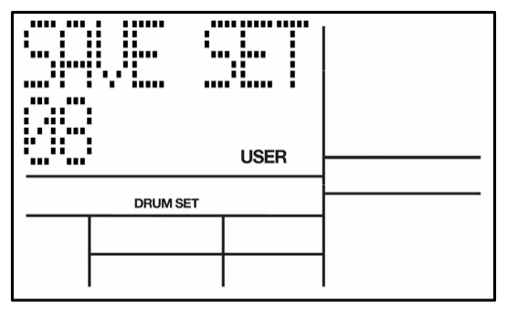
- To save the Drum Set to the current location, press REC.
- To save the Drum Set to a different location, enter the new Drum Set number with the INC/DEC buttons, number buttons (allowable range is 00-99), or the VALUE dial.
- Finally, press REC to save to the selected location.
If you were editing a Preset Drum Set and want to save it, you will be given the option to save it to a User Drum Set since you cannot overwrite a Preset Drum Set. This technique can also copy one Drum Set to a different Drum Set. Also, remember that if you change Patterns before saving your Drum Set, all of your edits will be lost.
Record Setup
Several parameters, such as quantization, swing, metronome options, Pattern length, are often adjusted prior to recording a Pattern. General instructions are:
- Press the RECORD SETUP button.
- Use the PAGE buttons to select different "pages" of functions; the display's lower right window shows the page number. These pages are described below.
- Adjust values on pages, if necessary, as described for each page.
- After making all needed changes, press RECORD SETUP again to exit, or choose another page.
Page 1: Select the Quantization Value (Quantize Select)
Background: As you record a Pattern, quantization shifts all drum events to the nearest selected rhythmic value to eliminate small timing errors. For example, with a quantization value of 1/16, all drum events you play will be shifted to the nearest 16th note.
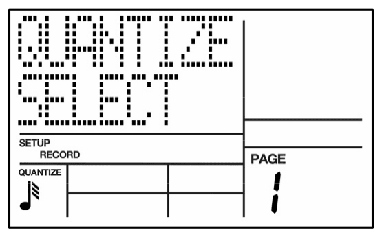
Quantization shifts your playing to the specified beat while you play, so choose the desired value before playing out your rhythms. Remember that you can also change quantization while recording if, for example, you want to record snare with eighth note quantization but hi-hats with 16th note quantization.
Enter the desired quantization value with the INC/DEC buttons, VALUE dial, or number buttons (1 = quarter note, 2 = quarter note triplet, 3 = 8th note, 4 = 8th note triplet, 5 = 16th note, 6 = 16th note triplet, 7 = 32nd note, 8 = 32nd note triplet, 9 and 0 = Off, equivalent to 1/384th note resolution).
The note icon displays the quantization value in standard rhythmic notation. See the chart below.
| Keypad | Note value | Display | Note name |
|---|---|---|---|
| 1 | 1/4 | ♩ | Quarter note |
| 2 | 1/6 | ♩3 | Quarter note triplet |
| 3 | 1/8 | ♪ | Eighth note |
| 4 | 1/12 | ♪3 | Eighth note triplet |
| 5 | 1/16 | 𝅘𝅥𝅯 | 16th note |
| 6 | 1/24 | 𝅘𝅥𝅯3 | 16th note triplet |
| 7 | 1/32 | 𝅘𝅥𝅰 | 32nd note |
| 8 | 1/48 | 𝅘𝅥𝅰3 | 32nd note triplet |
| 9, 0 | 1/384 | off | 384th note |
Tip: Quantization is most effective when used sparingly. If you're recording a drum part, quantize the kick and snare, but try recording the hi-hat in real time (or quantize the hi-hat, and record the snare in real time). Another trick is to combine both quantized and non-quantized parts. Example: hand claps often sound too mechanical when quantized—when humans clap hands, you end up with a bunch of different sounds happening within a few milliseconds of each other. A good way to simulate this effect (yet still have a rock-solid rhythm) is to record a quantized hand claps part, then turn off quantization and try to double the part. Sometimes what you overdub will be right on the beat, but sometimes it will be off by just enough to add that human touch.
Note: The quantize value also sets the step length in Step Edit mode.
Page 2: Gate
When entering Bass parts in Step Edit Mode, the Gate parameter specifies the duration of notes, as a percentage of the quantization value.
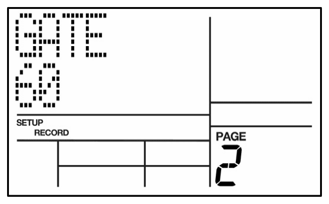
For example, if you have selected a gate time of 99 (which is equivalent to 100% of the quantization value) and a quantization value of ¼ note, the bass notes will be ¼ note in duration.
Page 3: Select the Swing Value (Swing Select)
Background: Swing affects the timing of pairs of equal-value notes. Each note normally defaults to taking up 50% of the total duration of both notes; adding swing lengthens the first note of the pair, and to keep the total duration of both notes the same, shortens the second note of the pair. This imparts the kind of feel found in most shuffles and jazz tunes, as well as a laid-back, rhythm and groove often found in hip-hop, R'n'B and pop music. For example, with Swing set to 62%, the first note of the pair takes up 62% of the total duration of the pair of notes, while the second note takes up 38% of the total duration.
Swing shifts notes as specified while you record, so choose the desired value before playing out your rhythms.
Enter the desired swing percentage with the INC/DEC buttons, VALUE dial or number buttons (1 = 54%, 2 = 58%, 3 = 62%, 4-0 = Swing Off).
Page 4: Enable Click and Set Rhythm (Click Select)
The metronome is designed to help you keep track of time while recording. On this page, you can enable or disable the metronome, as well as select the rhythm of the click.
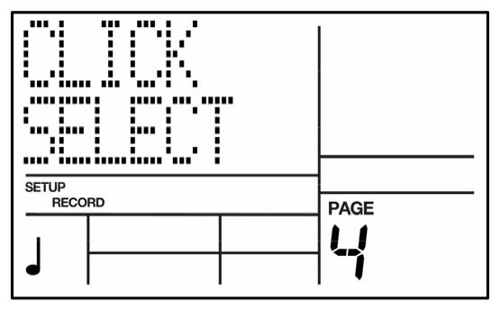
Enter the click value with the INC/DEC or number buttons (1 = quarter note, 2 = quarter note triplet, 3 = 8th note, 4 = 8th note triplet, 5 = 16th note, 6 = 16th note triplet, 7-0 = Click Off).
Note that the click is audible only when recording.
Page 5: Set Click Volume (Click Vol)
This page allows you to adjust the volume of the metronome.
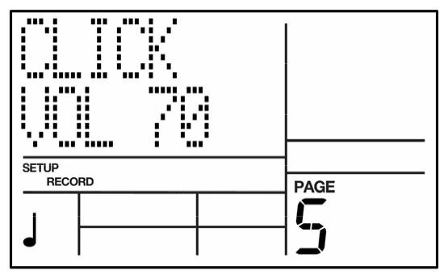
The display shows CLICK VOL and a two-digit number representing click volume (00 = inaudible, 99 = maximum volume). Enter the desired click level with the INC/DEC, number buttons, or by turning the VALUE dial.
Page 6: Velocity Sensitivity
Velocity Sensitivity describes how the pads will output sound depending on the applied velocity (i.e. how hard the pads are struck). This feature allows players with a heavier or lighter touch to customize the pad response to accommodate their particular playing style.
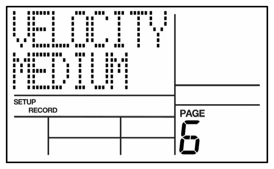
To select the desired dynamic response, use the INC/DEC buttons, the VALUE dial or the number buttons (1 = Fixed 1, 2 = Fixed 2, 3 = Fixed 3, 4 = Fixed 4, 5 = Fixed 5, 6 = Fixed 6, 7 = Fixed 7, 8 = Fixed 8, 9 = Soft, and 0 = Loud). Note that the Medium setting can be selected only with the INC/DEC buttons or VALUE dial.
Refer to the chart below for information on response curves. As you can see, soft response weights the response toward softer sounds; with medium response, the level is directly proportional to how hard you tap the pad; loud response weights the response toward louder sounds.
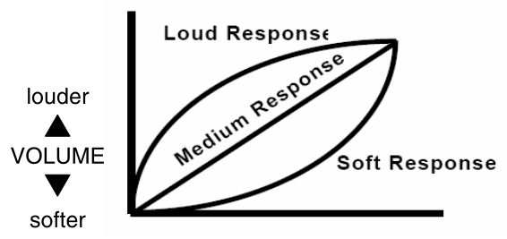
Fixed volume plays back the associated drum sound at one of eight possible volume levels. With Fixed Volume 1, all drums assume the level of the softest possible tap, regardless of how hard you tap the pads. With Fixed Volume 8, all drums assume the level of the loudest possible tap, regardless of how hard you tap the pads. Fixed Volumes 2-7 provide the levels between the softest and loudest extremes, with lower numbers giving softer levels.
Page 7: Beat Value
When recording sequences in Pattern Mode, this is the upper value or the amount of beats in the meter setting of the selected Pattern; for instance the 2 of a 2/4 time signature.
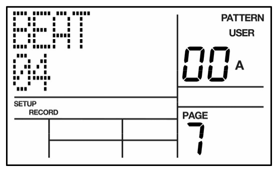
Enter the value with the INC/DEC, number buttons or the VALUE dial.
Press REC to accept the change. Go to another page or press RECORD SETUP again to cancel.
Page 8: Note Value
When recording sequences in Pattern Mode, this is the lower note value of the meter setting of the selected Pattern; for instance the 4 of a 2/4 time signature.
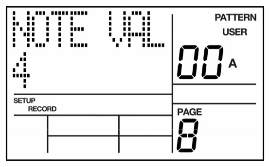
Enter the value with the INC/DEC, number buttons or the VALUE dial.
Press REC to accept the change. Go to another page or press RECORD SETUP again to cancel.
Page 9: Pattern Length
This page allows you to specify the length of the selected Pattern in steps. For example, 2 steps of a 4/4 time signature equal 2 bars of 4/4.
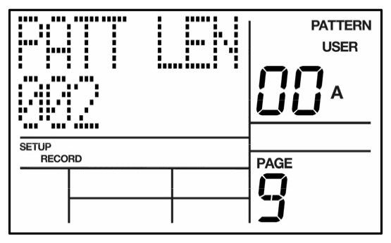
Use the INC / DEC buttons, the number buttons, or the VALUE dial to select the desired step length for the Pattern. Press REC (ENTER) to accept this change, or press the PAGE or RECORD SETUP buttons to cancel.
Page 10: Offset a Pattern or Drum Part
Offset shifts the selected Pattern or individual drum parts ahead of or behind the beat in 1/384th note increments to allow for altering the "feel" of a sequence. Note that this only affects already-recorded parts.
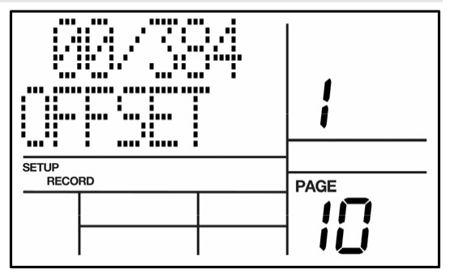
Hint: 96 sub-beats equal ¼ note.
The SR18 should be in Pattern mode and stopped. The display says OFFSET, which will be 00 (no offset).
- Press the pad to be offset (as confirmed by the display). If you don't select a pad, offset affects the entire Pattern.
- Enter the two-digit offset value with the INC/DEC buttons, VALUE dial, or number buttons. Positive numbers shift events ahead of the beat (lead), negative numbers shift events behind the beat (lag). The default is positive numbers; to enter a negative number with the number buttons, press DEC first.
Example: To offset a part 1/16th note later, enter -24 as the offset value since 24 sub-beats equals a 1/16th note.
- Press REC to enter this number into the SR18. The display will show OFFSET DONE and will reset the offset counter back to 00.
Note: The display counter resets after you exit the function. Therefore, it does not keep track of the total amount of offset, but only changes in offset.
Note: Drums offset to before the first beat "wrap around" to the end of the Pattern; drums offset past the end of the last beat "wrap around" to the beginning of the Pattern.
Page 11: Name the Pattern (Name)
This page allows you to name the currently selected Pattern.
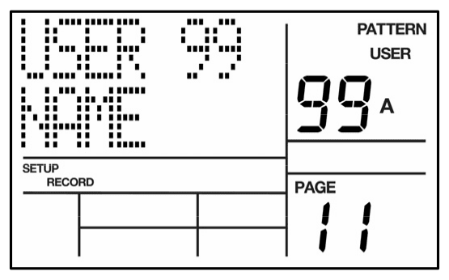
The display shows NAME and the current name (or NO NAME if the Pattern has not yet been named). To name, use the PAGE UP/DOWN buttons to select the character to be changed; select the desired character with the INC/DEC buttons or VALUE dial. Lower case and upper case letters, numbers, punctuation, and various special-purpose characters are available. You can also enter numbers with the number buttons.
Erase Functions
Erasing Drum Events While Recording
While the SR18 is recording, you can erase any individual drum event or series of events in real time to fix up errors. Erasure occurs only on those beats that coincide with the current quantization and swing values; turn quantization off to erase a drum wherever it occurs.
- The SR18 should be in Record Mode.
- Press and hold ERASE.
- While holding down ERASE, press the pad corresponding to the sound to be erased just before the first event to be erased, and release just after the last event to be erased. To erase a single event, tap the pad on that single event.
Erasing an Entire Pattern
If you erase both Main and Fill Patterns associated with a numbered Pattern, or you erase a Main or Fill Pattern and the other is empty, the Drum Set assignment (but not its Drum Set parameters), name, and length will revert to the default settings (i.e., the Drum Set with the same number as the Pattern, EMPTY PATTERN as the name, and a length of 8 beats). However, as long as either a Main or Fill Pattern contains previously-programmed data, the numbered Pattern will remember the Drum Set assignment, name, and length.
- The SR18 must be in Pattern mode and stopped to allow erasing a Pattern.
- Enter the two-digit Pattern number to be erased with the number or INC/DEC buttons.
- Press and hold the ERASE button. The display says PATTERN ERASE?.
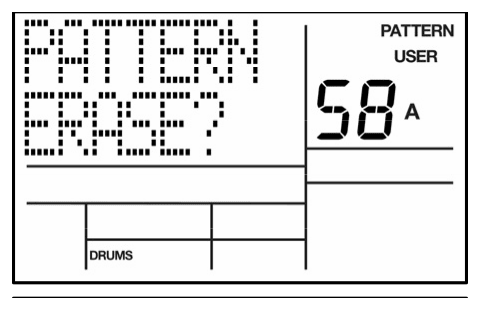
- While continuing to hold the ERASE button, press REC (ENTER). The display says PATTERN ERASED, followed by FILL ERASE?.
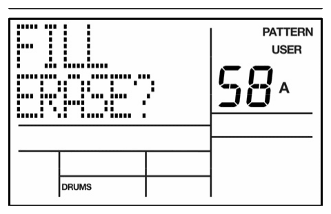
- While continuing to hold the ERASE button, press REC (ENTER) again. The display will read FILL ERASED.
- Release both buttons.
Tip: To retain the Drum Set assignment, length, and name when you erase a Pattern, hold ERASE and tap each drum pad. This erases the drum events assigned to that pad, but retains all other Pattern parameters.
Erase All Events Played by a Particular Drum Pad
This erases all events in a Pattern played by a specific pad. The Drum Set's parameters will not be affected.
- The SR18 should be in Pattern mode and stopped.
- Press and hold ERASE.
- While holding down ERASE, tap a pad to erase all events played by that pad. The display shows the drum pad number whose events were erased. You can continue to erase more drum sounds while ERASE is held down.
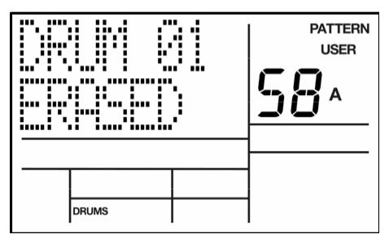
Erase All Instrument Events in Sub-Pattern
This operation allows you to erase all instrument events (for example, all Drum events) in the selected sub-pattern. The Drum Set's parameters will not be affected.
- The SR18 should be in Pattern mode and stopped.
- Press and hold ERASE.
- While holding down ERASE, press and hold the button corresponding to the layer which you would like to erase (DRUM, BASS, PERC).
- While holding down the 2 buttons, press REC (ENTER) to erase all instrument events in the selected sub-pattern.
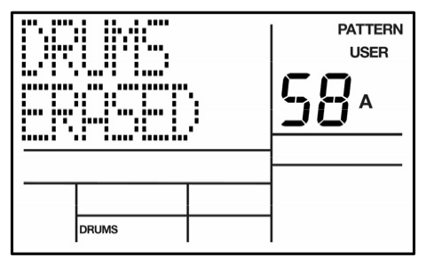
Copy / Save Functions
Saving a Pattern
The following operation will save the selected Pattern, including all sub-patterns (A, B and FILL) to a specific location, overwriting any data which may already exist. Please note that you need to save your Patterns if you wish to access them after you power-cycle the unit.
- The SR18 should be in Pattern mode and stopped.
- Select the Pattern you wish to save.
- Press and hold the SAVE / COPY button, and keep holding it down until step (6). The display says SAVE TO PATT.
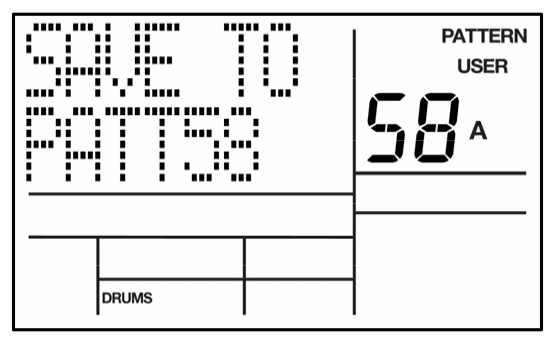
- Enter the destination Pattern number with the INC / DEC buttons, number buttons or the VALUE dial.
- Press REC (ENTER). The display says SAVE DONE.
- Release the SAVE / COPY and REC (ENTER) buttons.
Copying a Pattern
The following operation will copy only the selected sub-pattern (A, B, or FILL) to another destination. If the current Pattern is shorter than the destination, the part will be copied to the beginning, leaving the remainder blank. Copying a sub-pattern longer than the destination Pattern will automatically lengthen the destination Pattern (128 Beat maximum).
- The SR18 should be in Pattern mode and stopped.
- First, select a Pattern.
- Then select A, B or FILL sub-pattern to be copied by pressing the corresponding button.
- Press and hold the SAVE / COPY button, and keep holding it down until step (9).
- While holding the SAVE / COPY button, press PAGE UP. The display says COPY TO PATT.
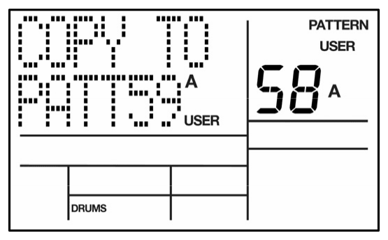
- Enter the destination Pattern number into which the current sub-pattern will be copied with the INC / DEC buttons, number buttons or the VALUE dial.
- Now select which sub-pattern you would like to copy the data into by pressing A, B or FILL.
- Press REC (ENTER). The display says COPY DONE.
- Release the SAVE / COPY and REC (ENTER) buttons.
Appending a Pattern
This operation adds the current Pattern, including all sub-patterns (A, B and FILL) to the end of a selected Pattern. Note that Patterns can only be appended to Patterns of the same time signature (i.e. a 3 / 4 Pattern can only be appended to another 3 / 4 Pattern).
- The SR18 should be in Pattern mode and stopped.
- Select the Pattern you would like to append.
- Press and hold the SAVE / COPY button, and keep holding it down until step (7).
- While holding the SAVE / COPY button, press PAGE UP twice. The display should say APPND TO PATT.
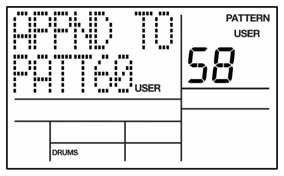
- Enter the destination Pattern number where you would like to append the original Pattern with the INC/DEC buttons, number buttons or the VALUE dial.
- Press REC (ENTER). The display says APPEND DONE.
- Release the SAVE / COPY and REC (ENTER) buttons.
Transposition
Each Pattern on the SR18 has a Pattern Transposition setting (0 by default). This setting allows you to quickly transpose the selected Pattern's Bass content. The Pattern Transposition setting will be stored along with all other Pattern parameters once the Pattern is saved into memory (See "Editing Patterns – Save/Copy Functions" section for information on saving Pattern data).
To change Pattern Transposition:
- The SR18 should be in Pattern mode.
- Press and hold BASS.
- While holding down BASS, press the PAGE UP button.
- The screen will display PATTRANS on the top line, along with the current transposition setting on the bottom line.
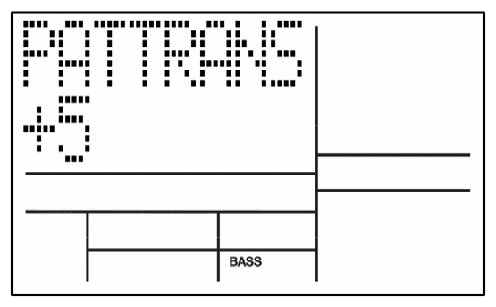
- Use the VALUE dial or INC / DEC buttons to select the transposition in semitones (-12 to +12 semitone range).
Please note: Pattern Transposition affects all sub-patterns contained in the selected Pattern.
Please note: Pattern data needs to be saved to memory for the Pattern Transposition setting to be recalled the next time you load the Pattern.
Pattern Step Editing
Step editing is an approach of entering notes and other values for a Pattern in a non-realtime method.
Step mode provides detailed Pattern editing. (Note that "step" does not refer to Song steps, but to the steps in a Pattern that hold drum events.) You can move through a Pattern one step at a time, stop at each event as desired, and delete the event, add an event, or change an event's volume. While occasionally somewhat tedious, Step Edit mode allows editing drum parts to your exact specifications.
Each step (also called a sub-beat) is 1/96th of a beat in duration, so at maximum resolution it takes 96 steps to "move through" a quarter note. To save time, you can step through the Pattern at various note values, as set by the quantization value (which is why it's preferable to select the quantization rate at which the Pattern was recorded).
Example: A 16th note consists of 24 sub-beats, so setting the quantization value to 1/16 lets you step through the Pattern 24 sub-beats at a time.
The following chart relates the number of sub-beats to note/quantization values.
| Note value | Note name | Sub-beats |
|---|---|---|
| 1/4 | Quarter note | 96 |
| 1/6 | Quarter note triplet | 64 |
| 1/8 | Eighth note | 48 |
| 1/12 | Eighth note triplet | 32 |
| 1/16 | 16th note | 24 |
| 1/24 | 16th note triplet | 16 |
| 1/32 | 32nd note | 12 |
| 1/48 | 32nd note triplet | 8 |
First, you will need to make sure that you are in Pattern Mode (PATTERN should be displayed in the upper right corner of the screen). To enter Pattern Step Edit Mode, press the STEP EDIT button.
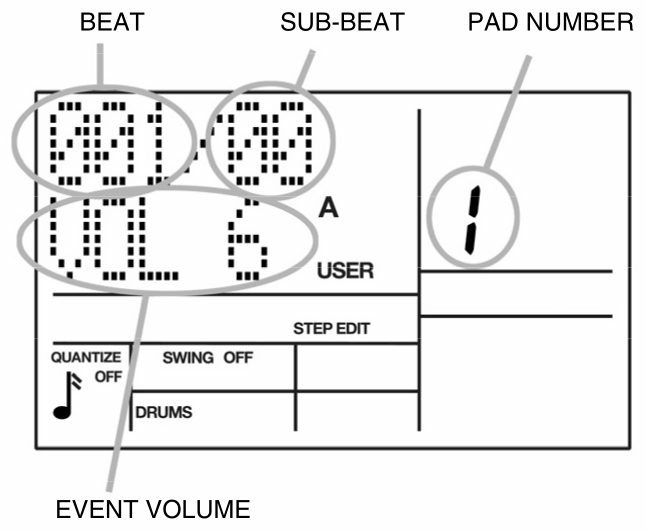
The display now shows the beat and sub-beat. If a drum event exists on this beat/sub-beat, the display will also show the drum pad that played the event and the event volume. If more than one drum event occurs on the same sub-beat, the PAGE UP/DOWN buttons step forward or backward respectively through each drum one at a time.
If no drum event exists on this beat/sub-beat, the display will show no pad number, and EMPTY in place of volume data.
To navigate through the steps at the current quantization rate, use the PAGE UP button to move forward or PAGE DOWN to move backward. If a drum exists between those beats that fall on the current quantization value, the drum will sound as you go past it, but the display will not stop on that drum. If swing is on, step mode will step in "swinged" increments.
Adding a New Drum to a Step
While in Pattern Step Edit Mode, use the PAGE buttons to select the step where the drum is to be added. Press the pad that corresponds to the sound you want to add. That drum, along with its volume (how hard the pad was hit), will be recorded into the displayed step.
If you play a pad and there is already a drum event played by that pad on the displayed step, you will edit the volume rather than add another event. This is true even if there are several events on the displayed beat, and an event other than the one to be edited is showing.
Erase a Drum Sound from a Step
While in Pattern Step Edit Mode, use the PAGE buttons to locate the step containing the drum to be erased. While holding down the ERASE button, press REC (ENTER). The drum that was being displayed will be erased.
Change a Drum Sound's Volume in a Given Step
Use the PAGE buttons to select the step containing the drum whose volume needs to be changed. Either press a number button from 1-8 (1=softest, 8=loudest), use the INC / DEC buttons or VALUE dial, or tap the displayed drum pad at the desired level. If you play a pad to change the level and there are several events on the same step, the display need not show the specific drum whose volume you want to edit.
Exit Step Edit Mode
To exit step mode, press STOP, RECORD SETUP, or PLAY (the latter will begin playing the Pattern from the beginning).
Song Mode
After creating the Patterns that make up a Song, it's time to string those Patterns together to create a complete Song. You can use Preset Patterns, User Patterns, or a combination of both to create your Song.
There are three ways to create Songs:
- In real time. As the SR18 plays in Song Mode (when the REC button is pushed), you can select the sequences of Patterns and Fills in real time; the SR18 will remember the sequence of Patterns and Fills you select.
- Manually. Select Song mode and program a list of Patterns and Fills in the order in which the Patterns are to be played. You can specify the beat and sub-beat on which the Fill takes over from the associated main Pattern.
- A combination of real time and manual recording. Create a Song in real time, then edit it manually to insert extra Song steps, delete Song steps, change tempo, etc.
The SR18 holds up to 100 Songs (numbered 00-99), and each Song can contain up to 254 steps. Each step holds either a Pattern number or Fill. Each Song remembers the tempo at which it was last played.
Playing Songs
- To play a Song, press the PATTERN / SONG button. When in Song Mode, the display will indicate SONG in the upper right corner of the screen.
- Select the Song you wish to play with the number keypad, INC / DEC buttons or the VALUE dial.
- After you select the Song, press the PLAY button. Note that the SR18 will not attempt to play blank songs (i.e. if the display shows EMPTY SONG). The screen will change as shown:
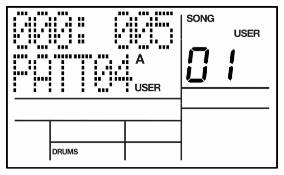
- The step number will be displayed on the top line of the display, on the left.
- The current beat will be displayed on the right.
- The pattern assigned to the current step will be displayed on the bottom line.
- A, B or FILL and PRESET / USER will be displayed as well, depending on which sub-pattern is selected for the step.
Recording a Song in Real-Time
To record a sequence of Patterns in real-time, follow the steps below:
- Switch to Pattern Mode (the display should say PATTERN) and select the first Pattern which you would like to use in your Song. Remember to specify A, B or FILL sub-pattern as well.
- Press the PATTERN / SONG button again to switch back to Song Mode (the display should show SONG).
- Press the REC button to enable Record Mode (the REC LED will illuminate). Now press the PLAY button to begin recording the Song. The Pattern which you selected above will begin to play and you will see this screen:
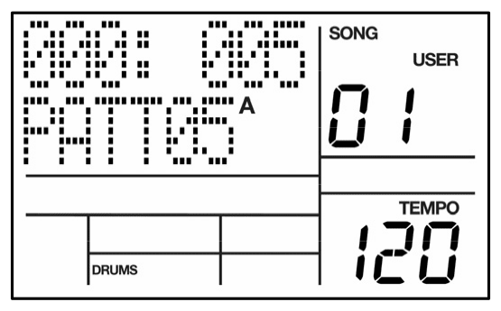
- To select the Pattern which should be played next, use the INC / DEC buttons. Alternatively, you can use the VALUE dial or you can enter the Pattern number with the number keys. You can also specify which sub-pattern should be played by pressing the A, B or FILL button. The screen will change to display NEXT and the cued Pattern number on the bottom line. The Pattern will begin playing as soon as the current Pattern plays through its end, and will be entered as the next Song step.
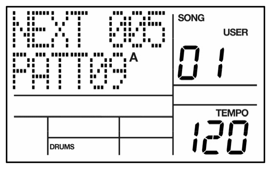
- Continue to select the rest of the Patterns for your Song.
- When finished, press STOP.
Notes:
If you enter a new Pattern number (Preset or User, A or B) while the first Pattern is playing, the new Pattern will begin playing after the first Pattern has finished and be stored as another Song step in the Song. If you let the original Pattern keep playing, it will add a new Song step with its Pattern number every time it repeats. In addition to selecting different Patterns, you can press FILL at any time. The SR18 will remember where you pressed FILL. As in Pattern mode, pressing FILL will automatically transition to the B Pattern if the A Pattern is currently playing (and vice versa), or will continue playing the same Pattern if the FILL button is held past the end of the Fill.
A Fill can transition into any Pattern number, A or B, by specifying the Pattern before the end of the Fill and releasing FILL before the Fill has finished playing. If you hold FILL past the end of the Fill, the associated Main Pattern will continue playing and any Pattern you may have previously specified for the next Step will be forgotten. When recording a Song, the Count/A/B/Fill footswitch duplicates the FILL button function.
Important: If you have already recorded material in a Song, pressing REC and PLAY will not allow recording until after the last Song step. However, you can overdub Fills at any time, and these will be recorded in the Song where played. Under these conditions, holding FILL past the downbeat doesn't make any difference; the Patterns used in Song steps are not altered.
Manual Song Creation (Song Step Edit Mode)
Another way to sequence your Song is to use Step Edit Mode. In this mode, you can manually enter Pattern numbers for each step of the Song.
- Select Song mode (the display should indicate SONG in the upper right corner) and select a desired Song number with the number keypad, INC / DEC buttons or the VALUE dial. For the purposes of this example, let's assume that you are starting a fresh Song (the display should say EMPTY SONG).
- Press the STEP EDIT button to enter Step Edit Mode. The REC LED will illuminate and you will see this screen:
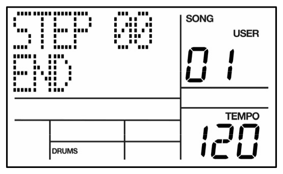
- Now use the number keypad, INC / DEC buttons, or the VALUE dial to select the first Pattern for the Song. If desired, choose between the A/B variations and Preset/User options.
You will see the screen below, where the second line indicates the Pattern which you have selected for the first step (step 00).
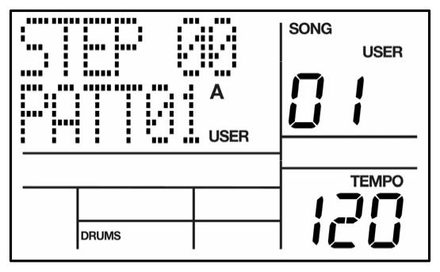
- Press the PAGE UP button to go to the next Song step.
- Enter the Pattern for the next step.
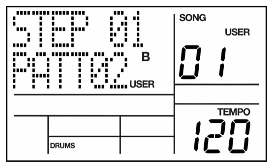
- Continue in a similar fashion until you have entered all the Patterns for the Song.
You can always change the Pattern associated with a particular step by navigating to the step with the PAGE UP / DOWN buttons and entering a new Pattern.
Adding a Fill to Your Song
- With the SR18 in Step Edit Mode, use the PAGE UP / DOWN buttons to select the step where the Fill is to be added.
- Press and hold the FILL button.
- Enter the number of beats and sub-beats after the start of the current step in which the Fill is to start playing with the number buttons and INC/DEC buttons respectively.
It is not necessary to press PLAY; the step will remember where the Fill is to occur. As the Song plays the step where the Fill occurs, the display will show FILL when the Fill begins playing.
Removing a Fill from Your Song
While in Record mode, there are two ways to remove a Fill from a Song:
- When the Fill step appears, press the A button for an A Pattern or press the B button for a B Pattern and the Fill will be removed.
- When the Fill step appears, press and hold the FILL button and press ERASE.
Inserting a New Step Between Two Existing Song Steps
- The SR18 should be in Step Edit Mode.
- Use the PAGE UP / DOWN buttons to select the step number that the inserted step should occupy. For example, to insert a step after step 04, select step 05.
- Press and hold SAVE / COPY, and keep holding it down until step (6). You should see this screen:
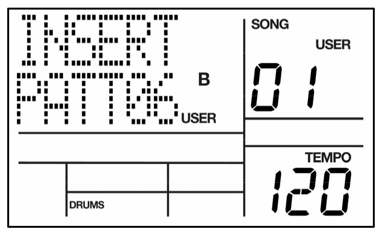
- Enter the two-digit Pattern number to be inserted.
- Press REC (ENTER). The new step is inserted, and all subsequent steps are automatically renumbered to reflect the addition of the inserted step (e.g., what used to be step 05 is now step 06, what used to be step 06 is now step 07, etc.).
- Release the SAVE / COPY and REC (ENTER) buttons.
Deleting a Step
- The SR18 should be in Step Edit Mode.
- Use the PAGE UP / DOWN buttons to select the step number to be deleted.
- Press and hold ERASE. You will see this screen:
- While continuing to hold ERASE, press REC (ENTER). The step is deleted, and all subsequent steps are automatically re-numbered to reflect the deletion of the step (e.g., what used to be step 06 is now step 05, what used to be step 07 is now step 06, etc.).
- Release the ERASE and REC (ENTER) buttons.
Replacing a Step
- The SR18 should be in Step Edit Mode.
- Use the PAGE UP / DOWN buttons to select the step number to be replaced.
- Enter the new Pattern number (with appropriate A or B, Fill, or User/Preset options).
Setting Song Tempo
There are two ways to set tempo:
Method 1
- Press STOP if the Song is playing.
- Press the TAP TEMPO button several times at the desired tempo. The SR18 will average the time between taps and derive a tempo.
Note: If a footswitch is plugged into the Count/A/B/Fill jack, tapping the footswitch at the desired rate is equivalent to pressing the TAP TEMPO button.
Method 2
- Alternatively, you can press and hold the TAP TEMPO button and use the INC / DEC buttons or VALUE dial to select a new tempo.
Inserting a Tempo Change in a Song
This option allows you to insert a tempo change at a selected Song step.
- Press STOP if the song is playing.
- Press the STEP EDIT button to enter Song Step Edit mode.
- Press and hold TAP TEMPO and press PAGE UP to enter the Tempo Event Edit Mode:
- A tempo change can be inserted at any beat of the Song Step. While holding TAP TEMPO, use the PAGE buttons to select the beat within the step.
- While holding TAP TEMPO use the INC / DEC buttons, number keypad or the VALUE dial to set the tempo.
- Release the TAP TEMPO button to return to the previous page.
Note: If you would like to erase an existing Tempo Change event, navigate to the beat where the event occurs while holding TAP TEMPO and press ERASE.
Controlling Playback Position
- If you press STOP while a song is playing, the next time you press PLAY the Song will start from the beginning.
- If you press PLAY while a song is playing, the song will pause. Press PLAY again to resume playback.
- Press PAGE UP while a song is playing to advance playback to the next Song step.
- Press PAGE DOWN while a song is playing to restart playback from the current Song step.
Loop a Pattern Indefinitely
In Song Perform mode, pressing and holding FILL until the end of a song step will cause that step to repeat. A footswitch plugged into the Count/A/B/Fill jack will perform the same function. For example, you can use this feature if a soloist decides to take another few bars.
Another use is if two Songs share the same tempo. Follow the first Song with a blank Pattern, then append the second Song. Between Songs, hold down the footswitch on the blank Pattern song step, then release to start the second Song.
Start from the Middle of a Song
You need not start a Song from the beginning each time; in Record mode, a Song can start at any Song step.
- Make sure the SR18 is in Record mode (Press the REC button), even if you don't plan to record anything.
- Use the INC/DEC buttons to select the Song step at which you want the SR18 to start playing.
- Press PLAY. The SR18 will start playing at the downbeat of the selected Song step.
- If you don't want to extend the Song length, use the normal Playback mode before reaching the end of the Song (press REC again so the REC LED is no longer illuminated). If you do want to extend the Song length, remain in Record mode.
Erasing an Entire Song
- The SR18 should be in Song Mode.
- Use the number buttons, INC / DEC buttons or the VALUE dial to select the Song to be erased.
- Press and hold the ERASE button. You will see this screen:
- While holding down the ERASE button, press REC (ENTER). The display says SONG ERASED and erasure is complete.
- Release the ERASE and REC (ENTER) buttons.
Saving Your Song
When you are finished putting together your Song, you will need to save it to permanent memory. Please note that all Song data will be lost if you turn off the SR18 before saving your Song.
- The SR18 should be in Song Mode.
- Use the INC / DEC buttons, the number keypad or the VALUE dial to select the Song which you would like to save.
- Press and hold the SAVE / COPY button.
- Press REC (ENTER) to save the song. The display will show SAVE DONE.
- Release the SAVE / COPY button.
Append a Song
You can use this feature to append all content from the selected Song to the end of another Song. Appending a Song to an empty destination will create an identical copy of the Song. Note that you can double the Song sequence by appending a Song to itself.
- The SR18 should be in Song Mode.
- Select the Song to be copied to itself with the number buttons, INC / DEC buttons or the VALUE dial.
- Press and hold the SAVE / COPY button.
- While holding the SAVE / COPY button, press the PAGE UP button. You will see this screen:
- While continuing to hold the SAVE / COPY button, enter the same Song number as the one selected in step (2).
- Press REC (ENTER) to copy the song to itself.
- Release the SAVE / COPY and REC (ENTER) buttons.
Name a Song (Name)
- Press RECORD SETUP. If the Song has been named, the name will show on the top line. If the Song has not been named, the display says NO NAME.
- Enter the name using the PAGE UP/DOWN buttons to select the character to be changed (selected character is indicated by a cursor underneath it), and the INC/DEC buttons or VALUE dial to select the desired character. Lower case and upper case letters, numbers, punctuation, and various special-purpose characters are available. You can also enter numbers with the number buttons.
System Setup
This Mode accesses important System functions. General instructions are:
- Press the SYSTEM SETUP button.
- Use the PAGE (up and down) buttons to select different "pages" of functions; the display's lower right window shows the page number. The pages are described below.
- Adjust values on pages, if necessary, as described for each page.
- After making all needed changes, press SYSTEM SETUP again to exit, or choose another page.
Note: All the parameters on the following pages must be saved if you want to retain them. To save them, press and hold the SAVE / COPY button and press the REC (ENTER) button.
Page 1 / MIDI Channel (MIDI CH)
When controlling the SR18 with external MIDI devices, such as MIDI drum pads and keyboards, you can specify MIDI Channel settings for each instrument layer on this page.
The SR18 can receive MIDI data on any 1 of 16 MIDI Channels or on all 16 Channels simultaneously (Omni Mode).
- To change which channel an instrument layer is receiving MIDI data on, first select the instrument layer by pressing DRUM, PERC or BASS.
- Select the desired MIDI channel for the instrument layer, using the number buttons, INC / DEC buttons or the VALUE dial. (With the number buttons, enter a leading zero if necessary; 00 selects Omni mode.)
Tip: When several instruments are being driven by MIDI, it is a good idea to assign different MIDI Channels (not Omni) for each instrument in the mix. This ensures that the instrument will receive only the data intended for it.
Page 2 / Receive MIDI Notes (DRUM IN, PERC IN, BASS IN)
The display shows DRUM IN, PERC IN or BASS IN (depending on which mode is currently selected). This page features two different MIDI input velocity curves (ON V1 and ON V2). To have the SR18 receive note messages at its MIDI input, use the INC/DEC buttons to select ON V1 or ON V2. Select OFF to have the SR18 ignore note messages. ON V1 is a normal linear velocity curve, and will not affect MIDI velocity data being sent by the controller. For keyboards that do not provide a full range of velocity, ON V2 will allow the drums to be played at full volume without having to send full velocity from the MIDI controller.
Background: Select ON V1 or ON V2 if you're using the SR18 as an expander module, or want to play real time drum controllers into the SR18 as it plays a Pattern or Song. Select OFF if you're using the SR18 as a drum machine slaved to a sequencer; when OFF, the SR18 follows the sequencer timing data but not note data (you don't want it to play other parts). Note that in this scenario Clock In (page 5 of the System Setup menus) must be set to ON.
Page 3 / Transmit MIDI Notes (DRUM OUT, PERC OUT, BASS OUT)
The SR18 can output MIDI data from pad hits and Pattern or Song sequences through the MIDI OUT connection on the rear panel. This allows you to send data into a sequencer for recording, or to drive other sound modules from the SR18.
- To change an instrument layer's MIDI OUT properties, first select DRUM, PERC or BASS.
- To have the SR18 output MIDI note data from pad hits or when playing a Pattern/Song, use the INC/DEC buttons or the VALUE dial to select ON. Select OFF if you don't want the SR18 to transmit note data.
Tip: If the SR18 is acting as a drum machine and provides the master clock to a MIDI system, select OFF so that other devices don't respond to the MIDI note data.
Page 4 / Assign MIDI Note Numbers to Drum Pads (NOTE)
This page allows you to specify which MIDI Note Number is associated with a given pad. This number describes both the MIDI Note which will trigger the pad when controlling the SR18 externally, as well as the MIDI Note which will be sent out to other MIDI devices when the associated pad is struck.
The display shows the note number/name in the upper left, and the drum pad number in the upper right window.
- First, select which instrument layer you wish to edit by pressing DRUM, PERC or BASS.
- Press the drum pad to be assigned to a MIDI Note, as confirmed by the Drum Pad Number display.
- Enter the note number/name with the number buttons, INC/DEC buttons or the VALUE dial.
Note: MIDI Note assignments are "global" and affect every Pattern. MIDI note assignments are not individually selectable for each Pattern.
The default note assignments for each instrument layer are shown below.
Note: The Bass part cannot have MIDI Note numbers assigned. These are preset to start at MIDI Note number C2 (048).
| Pad | Drums | Perc | Bass | |||
|---|---|---|---|---|---|---|
| MIDI note # | Key name | MIDI note # | Key name | MIDI note # | Key name | |
| Pad 1 | 036 | C1 | 060 | C3 | 048 | C2 |
| Pad 2 | 038 | D1 | 061 | C#3 | 049 | C#2 |
| Pad 3 | 037 | C#1 | 063 | D#3 | 050 | D2 |
| Pad 4 | 042 | F#1 | 064 | E3 | 051 | D#2 |
| Pad 5 | 044 | G#1 | 062 | D3 | 052 | E2 |
| Pad 6 | 046 | A#1 | 075 | D#4 | 053 | F2 |
| Pad 7 | 048 | C2 | 067 | G3 | 054 | F#2 |
| Pad 8 | 047 | B1 | 068 | G#3 | 055 | G2 |
| Pad 9 | 041 | F1 | 065 | F3 | 056 | G#2 |
| Pad 10 | 049 | C#2 | 066 | F#3 | 057 | A2 |
| Pad 11 | 051 | D#2 | 069 | A3 | 058 | A#2 |
| Pad 12 | 053 | F2 | 080 | G#4 | 059 | B2 |
Page 5 / Accept External Clock Value (CLOCK IN)
Playback and tempo on the SR18 can be controlled by external devices through MIDI Clock if:
- The external device (sequencer, drum machine, etc.) generates MIDI timing signals.
- These signals go from the external device's MIDI OUT to the SR18's MIDI IN.
- CLOCK IN is ON.
To have the SR18 recognize clock (timing) messages present at its MIDI input, use the INC/DEC buttons or VALUE dial to select ON (if no clock messages are present, the SR18 will follow its internal clock tempo). Select OFF to have the SR18 ignore clock messages and follow its internal clock tempo regardless of what timing data appears at the MIDI IN.
Tip: When using the SR18 as an expander module, set CLOCK IN to OFF so that timing signals don't start playing a Pattern.
Page 6 / Send Clock Value to Other Devices (CLOCKOUT)
The SR18 can generate MIDI Clock timing signals to which other devices can synchronize if:
- The external device (sequencer, drum machine, etc.) can respond to MIDI timing signals.
- These signals go from the SR18's MIDI OUT to the external device's MIDI IN.
- CLOCKOUT is ON.
To have the SR18 generate timing data at its MIDI out, use the INC/DEC buttons or the VALUE dial to select ON.
Select OFF to inhibit MIDI timing signals from appearing at the MIDI out jack.
Tip: When slaving the SR18 to other devices, CLOCKOUT should be OFF and CLOCK IN should be ON.
Page 7 / Merge MIDI In with MIDI Out (MIDITHRU)
To have the SR18 merge data appearing at the MIDI IN with the timing and/or note data transmitted through the MIDI OUT, you can enable MIDITHRU.
Use the INC/DEC buttons or VALUE dial to select ON. Select OFF to have the SR18 MIDI OUT transmit SR18 timing and note data only.
Example: Turning MIDI OUT to MIDI THRU can be handy for some system applications. Assume a MIDI keyboard connects to the MIDI IN on the SR18 and the unit serves as the master clock for a sequencer (the MIDI OUT from the SR18 is connected to the sequencer's MIDI IN). With MIDITHRU set to ON, the keyboard note data will be passed through the SR18 and appear at the sequencer's MIDI IN.
Other SR18 settings should be DRUM IN set to OFF (so the SR18 doesn't respond to your keyboard playing) and CLOCKOUT set to ON so that the SR18 clock drives the sequencer. DRUMOUT should also be OFF so that the sequencer doesn't record the SR18 drum notes. Plugging the sequencer MIDI OUT to the keyboard MIDI IN plays back the sequenced notes through the keyboard.
Technically speaking, MIDI timing data (as provided by a master unit such as a sequencer) received at the SR18's MIDI IN is not sent to the MIDI OUT. However, this will appear to be the case since the SR18 will generate its own timing data in response to the timing data received at its MIDI IN, if CLOCK IN and CLOCK OUT are both ON.
Page 8 / Select Drum Sets via MIDI Program Changes (PRG CHNG)
A Program Change is a message sent to devices which causes them to switch to a new program, or bank of sounds. Drum Set selection on the SR18 can be controlled externally at any time (even during playback) through the use of Program Change messages.
To have the SR18 receive Program Change messages, use the INC/DEC buttons or VALUE dial to select ON. Select OFF to have the SR18 ignore Program Change messages.
Program Change (PC) 00 selects User Drum Set 00; PC 01 selects User Drum Set 01; PC 02 selects User Drum Set 02; etc. However, be aware that some devices number Program Changes as 1-128, others as 0-127, and some as banks of programs.
Tip: If the device generating Program Changes follows a non-standard protocol, it's a good idea to make up a conversion chart which shows which Program Changes call up which Drum Sets.
Please note that in order to access User kits, you will need to send a Bank Select message along with the Program Change. Refer to the table below for information on how to access different kits.
| Bank MSB | Bank LSB | Prog change | Selection |
|---|---|---|---|
| 0 | 0 | 00-99 | Preset drum kits |
| 0 | 1 | 00-99 | User drum kits |
| 0 | 0 | 00-99 | Preset perc kits |
| 0 | 1 | 00-99 | User perc kits |
| 0 | 0 | 00-99 | Preset bass kits |
| 0 | 1 | 00-99 | User bass kits |
Page 9 / Tempo Selection (TEMPO)
This function describes how the SR18 will use tempo data when playing back Patterns.
If you choose GLOBAL, the SR18 will use a global tempo setting and will ignore any tempo data associated with a Pattern.
If you choose PERPAT, the SR18 will use the tempo data stored with each Pattern. For example, if Pattern 01's tempo is set to 90 and Pattern 02's tempo is set to 120, the SR18 will increase the tempo when switching from Pattern 01 to Pattern 02.
Page 10 / Map Drum Notes (NOTE MAP)
Within each Pattern, MIDI notes can either be mapped to 12 different sounds in NORMAL mode, or they can be mapped to any of five drumset groups (User Drumsets 00-09, 10-19, 20-29, 30-39, etc.) in MULTI-DRUMSET mode.
Any of these drumset groups can cover MIDI notes 000 through 119. This makes the SR18 ideal for use as a drum sound module, triggered by either an electronic drum kit or set of electronic drum pads, or by notes from a sequencer.
Note that while in this mode, you cannot record notes into a Pattern via MIDI. It is assumed that you will be using the SR18 strictly as a drum sound expander module.
The chart below shows which drum pads of which drum sets are triggered by which MIDI notes. The logic to this assignment is that there are 12 drum pads per octave of notes, so pad 1 always starts on a C note (MIDI notes 000, 012, 024, 036, 048, 060, 072, 084, 096, and 108). Remember that these drum assignments must be saved as Drum Sets in order to retain the note map assignments.
Note: In this chart, Pad and MIDI note number values for drumset 00 also apply to drumsets 10, 20, 30, and 40; values for drumset 01 also apply to drumsets 11, 21, 31 and 41, etc.
| Drum set | 1 | 2 | 3 | 4 | 5 | 6 | 7 | 8 | 9 | 10 | 11 | 12 |
|---|---|---|---|---|---|---|---|---|---|---|---|---|
| 00 | 000 | 001 | 002 | 003 | 004 | 005 | 006 | 007 | 008 | 009 | 010 | 011 |
| 01 | 012 | 013 | 014 | 015 | 016 | 017 | 018 | 019 | 020 | 021 | 022 | 023 |
| 02 | 024 | 025 | 026 | 027 | 028 | 029 | 030 | 031 | 032 | 033 | 034 | 035 |
| 03 | 036 | 037 | 038 | 039 | 040 | 041 | 042 | 043 | 044 | 045 | 046 | 047 |
| 04 | 048 | 049 | 050 | 051 | 052 | 053 | 054 | 055 | 056 | 057 | 058 | 059 |
| 05 | 060 | 061 | 062 | 063 | 064 | 065 | 066 | 067 | 068 | 069 | 070 | 071 |
| 06 | 072 | 073 | 074 | 075 | 076 | 077 | 078 | 079 | 080 | 081 | 082 | 083 |
| 07 | 084 | 085 | 086 | 087 | 088 | 089 | 090 | 091 | 092 | 093 | 094 | 095 |
| 08 | 096 | 097 | 098 | 099 | 100 | 101 | 102 | 103 | 104 | 105 | 106 | 107 |
| 09 | 108 | 109 | 110 | 111 | 112 | 113 | 114 | 115 | 116 | 117 | 118 | 119 |
Page 11 / Manual Drumset Override (SET MODE)
Each Pattern has an associated, assigned Drum Set. However, you can tell the SR18 to ignore these stored assignments, and retain the currently selected Drum Set regardless of whether or not you change Patterns. This is useful if you want to hear how a Pattern would sound with a different Drum Set (just set one up manually) as opposed to the one stored with the Pattern.
Use the INC/DEC buttons or the VALUE dial to select PATT (each Pattern uses its assigned Drum Set) or MANUAL (the SR18 will retain the currently selected drum assignments regardless of which Pattern is chosen).
Note: If changing Patterns doesn't call up different Drum Sets, this parameter is probably set to MANUAL instead of PATT.
Page 12 / LEDs (LEDS OFF)
On this page you can specify whether the LEDs on the SR18 will be lit, or turned off to preserve battery life.
Use the INC / DEC buttons or the VALUE dial and select OFF to turn off the LEDs. Select ON to turn on the LEDs.
Page 13 / Backlight Brightness (BACKLITE)
On this page, you can adjust the brightness of the display. Note that lower brightness settings will help preserve battery life.
Use the INC / DEC buttons or the VALUE dial to adjust the brightness setting (OFF, 1-9 or FULL for maximum brightness).
Page 14 / Battery Level (BATT LVL)
This page indicates the remaining battery charge.
Page 15 / Low Battery Warning (LO BATT)
On this page you can specify the threshold the battery should reach before warning of low battery. This warning will let you know when it is time to replace the batteries or plug in the power adapter.
Use the number buttons, INC / DEC buttons or the VALUE dial to select a percentage of the full battery charge.
Page 16 / Check Available Memory (MEM FREE)
This page shows the approximate amount of free memory available (expressed as a percentage of the total amount).
It is important to check memory from time to time because the SR18 always requires some free memory for proper operation. If the available memory falls below 15% or so, immediately save the SR18's data as described below.
Some operations may not be possible even if a small amount of memory is left. This is because the SR18 duplicates a Pattern before it is modified (length change, offset change, etc.). If you try to alter a Pattern that takes up more memory than is available, the display will tell you that there is no more memory left.
Immediately save the SR18's data, and determine whether you can erase any unwanted Patterns or Songs to free up some memory.
Page 17 / Send Song and Pattern Data to MIDI SysEx Storage Device (SEND OUT MIDI?)
This page allows you to convert the SR18's Pattern and Song information into MIDI system exclusive data and send this data through the MIDI out. This data can be transferred to software and hardware devices which support MIDI SysEx storage.
There are two main reasons to save your work:
- Although the SR18 can typically store many events, eventually it will run out of memory. You can save the memory contents, fill up the memory with new Patterns and Songs, and re-load the old data when needed.
- It is vitally important to back up what's in the SR18's memory! A mechanical problem (surge on the power line, a quick zap of static electricity) or operator error could alter the data in memory. Save your data whenever you've done enough work on something that you wouldn't want to lose that work. If possible, make two backups, and store the second backup in a different physical location from the primary backup.
While on this page, press REC (ENTER) to send SR18 Pattern and Song data as SysEx data. The display will say SENDING MIDI… to confirm that data is being sent.
Note: Typically, the MIDI OUT would connect to another SR18's MIDI IN or a system exclusive data storage device such as a MIDI sequencer.
Sending MIDI SysEx Song and Pattern Data to the SR18
If you wish to load Pattern and Song data back into the SR18, please follow the instructions below. Please note that this operation will erase any Song and Pattern data which exists on the SR18!
- Connect a 5-pin MIDI cable from your MIDI SysEx device to the SR18's MIDI IN.
- Turn off the SR18.
- Hold down the SAVE / COPY button.
- Turn on the SR18 while holding down the SAVE / COPY button.
- After a few seconds, you should see this screen. The SR18 is ready to receive data.
- Now transfer the MIDI system exclusive data into the SR18. Refer to your MIDI SysEx device's documentation for information on transferring MIDI SysEx.
- Once the transfer is complete, turn off the SR18 and then turn it back on.
Applications
MIDI Sync Applications
SR18 As MIDI Timing Master
The SR18 can control several other slave MIDI drum machines or sequencers by turning on MIDI Clock Out, which sends SR18 timing information down the MIDI line.
- Turn on MIDI Clock Out (page 6 of the System Setup menus).
- Program the slave units to not follow their internal clocks, but to accept external MIDI Clock and Start/Stop data. Refer to each device's manual to find out how to do this. Enable the slave's Song Position Pointer if it is available.
- Press PLAY on the SR18. The slave units should start at the same time, and progress at the same tempo. If the slaves respond to Song Position Pointer, you can start an SR18 Song at any point, and after a few seconds the slaves will catch up and synchronize from that point on.
The diagram below shows an SR18 serving as the MIDI system master clock, with a sampler device set as a slave. To slave the sampler (or any external device accepting MIDI in) use a 5-pin MIDI cable to connect the MIDI OUT of the SR18 to the MIDI IN of the device.
SR18 As MIDI Timing Slave
The SR18 can be controlled by external devices through MIDI Clock. This allows you to sync playback and tempo on the SR18 to your external MIDI device.
- Turn on MIDI Clock In on the SR18 (page 5 of the System Setup menus).
- Program the master unit to send MIDI Clock. Refer to each device's manual to find out how to do this.
- Press PLAY on the master clock device. The SR18 should start at the same time, and progress at the same tempo.
The diagram below shows an SR18 serving as a MIDI system slave, with a synth workstation device set as the master clock source. To slave the SR18, use a 5-pin MIDI cable to connect the MIDI OUT of the master clock device to the MIDI IN of the SR18.
Strategies for Assembling Patterns and Songs
Ideally, you should be able to translate your inspirations into tangible form with a minimum amount of effort. The following tips and techniques help speed up the process of creating Patterns and Songs.
Create Fills Quickly with the Copy Function
Many times a Fill will simply be a variation on another Pattern, but with a few minor differences to add variety or serve different musical purposes. To save time, use the Copy function to copy the main Pattern to the Fill, and then add variations to the Fill in real time or with Step Edit mode.
Assemble Short Patterns into Longer Patterns with the Copy Function
It's less time-consuming to work with short Patterns, since you don't have to wait for the entire Pattern to cycle through before overdubbing or "spot erasing" events. After assembling several short Patterns, use the copy function to append Patterns into a longer Pattern.
Example: Create four eight-beat Patterns, then use the copy function to combine these into a single 32-beat Pattern.
Save Memory Through Song Steps
Whenever possible, repeat Patterns using Song steps rather than program long Patterns.
Example: Suppose you have a 16-measure figure where the first three groups of four measures are identical, and the final group of four measures provides some sort of variation. Recording this as one 16-measure Pattern will take up more memory than recording two Patterns (one of the first group of four measures and one of the last group of four measures), and while in Song mode repeating the first group three times followed by the last group once.
Odd Time Signatures
For time signatures based on quarter notes, changing the number of beats in a Pattern can also change the time signature.
Example: Programming a Pattern seven beats long will yield a measure of 7/4. Programming a Pattern 14 beats long will yield two measures of 7/4. Time signatures such as 2/4, 3/4, 5/4, 9/4, and so on are easy to implement.
For time signatures based on eighth notes, it's easiest to double the tempo so that each beat lasts an eighth note instead of a quarter note. However, you will have to take this into account when quantizing and setting the metronome—if the display says a quarter note, it will be read as an eighth note.
Plan carefully when mixing different time signatures within the same piece. If some Patterns use a time signature based on quarter notes and others on eighth notes, you will need to double the tempo for the quarter note-based Patterns to match up with the eighth-note based Patterns.
Understanding Rhythmic Notation
Measures A piece of music is divided into smaller units called measures (also called bars), and each measure is divided into beats. In the SR18, each beat is further sub-divided into 96 sub-beats.
Rhythmic Values for Notes With a measure written in a 4/4 time signature, there are 4 beats per measure, and each beat represents a quarter (1/4) note. Thus, there are 4 quarter notes per measure of 4/4 music. With a 3/4 time signature the "numerator" indicates that there are 3 beats per measure, while the "denominator" indicates that each of these beats is a quarter note (1/4).
There are two eighth notes per quarter note. Thus, there are eight eighth notes per measure of 4/4 music.
There are four 16th notes per quarter note. Thus, there are sixteen 16th notes per measure of 4/4 music.
There are eight 32nd notes per quarter note. Thus, there are thirty-two 32nd notes per measure of 4/4 music.
There are also notes that span a greater number of beats than quarter notes. A half note equals two quarter notes. Therefore, there are two half notes per measure of 4/4 music. A whole note equals four quarter notes, so there is one whole note per measure of 4/4 music. (We keep referring to these notes in 4/4 time because that is the most commonly used time signature in contemporary Western music.)
Triplets The above notes divide measures by factors of two. However, there are some cases where you want to divide a beat into thirds, giving three notes per beat. Dividing a quarter note by three results in eighth-note triplets. The reason why we use the term eighth-note triplets is because the eighth note is closest to the actual rhythmic value. Dividing an eighth note by three results in 16th-note triplets. Dividing a 16th note by three results in 32nd note triplets.
Rests You can also specify where notes should not be played; this is indicated by a rest, which can be the same length as any of the rhythmic values used for notes.
Time Signatures 4/4 (and to a lesser extent 3/4) are the most common time signatures in our culture, but they are by no means the only ones. In jazz, both 5/4 (where each measure consists of five quarter notes) and 7/4 (where each measure consists of seven quarter notes) are often used. In practice, complex time signatures are played like a combination of simpler time signatures; for example, some 7/4 compositions would have you count each measure not as 1, 2, 3, 4, 5, 6, 7 but as 1, 2, 3, 4, 1, 2, 3. It's often easier to think of 7/4 as one bar of 4/4 followed by one bar of 3/4 (or the other way around, depending on the phrasing), since, as we mentioned, 4/4 and 3/4 are extremely common time signatures.
MIDI Implementation Chart
| Function | Transmitted | Recognized | Remarks | |
|---|---|---|---|---|
| Basic Channel | Default | 1-16 | X | |
| Changed | 1-16 | X | ||
| Note Number | 0-127 | X | ||
| True Voice | 0-127 | X | ||
| Velocity | Note On | 1-127 | X | |
| Note Off | 0 | X | ||
| After Touch | Ch's | X | X | |
| X | X | |||
| Pitch Bend | O | O* | ||
| Program Change | True # | 0-127 | X | |
| System Exclusive | O | O | RESTORE MIDI Mode only | |
| System Common | Song Pos | 0 | X | MIDI out only |
| Song Sel | 0 | X | ||
| Tune | X | X | ||
| System Realtime | Clock | O | O | |
| Commands | X | X | ||
| Aux Messages | Local On/Off | X | X | |
| Active Sense | X | X | ||
| Reset | X | X | ||
| GM On | X | X | ||
Notes: * Available for Bass sounds only. O: Yes, X: No.
Factory Reset
To restore the SR18's factory presets, hold the SAVE / COPY button and ERASE button simultaneously while turning on the SR18.
Note: This will erase all user data, including User Drum Sets, Patterns, Songs, etc.
Key Features
- Professional drum machine so you can record and play back your own beats
- 12 natural feeling, velocity-sensitive drum pads
- Large 32MB sound set, with percussion bank and bass synth sounds
- Dynamic Articulation stereo samples with reverb and ambience for realistic playing
- 100 Preset / 100 User drum kits with a large collection of sounds assignable to any pad
- 32 voice polyphony
- Built-in Effects – Reverb, EQ and Compression
- Built-in rhythm patterns to complement your playing
- Large LCD display with easy-to-navigate interface
- Instrument input for connecting a guitar or bass
- MIDI output to play external MIDI devices
- MIDI input for using the SR18 as a drum expander module
- 2 Footswitch inputs for controlling Start/Stop and Count/A/B/Fill
- High-quality 24-bit stereo, aux L/R and headphone outputs
- AC or battery powered (batteries not included)
- Lightweight, durable enclosure
Technical Specifications
| Audio Outputs | 1 TRS ¼" (aux) 2 TS ¼" (main) 1 TRS ¼" (phones) |
|---|---|
| Pads | 12 velocity sensitive (w/Dynamic Articulation™) |
| Sample/DAC Bit Resolution | 16 / 24 |
| Sounds | 500 |
| Sounds Accessible via Pads | 12 |
| Sounds Accessible via MIDI | 120 |
| Polyphony | 32 voice |
| Panning | 7-position user programmable |
| Velocity Response | 8 loudness levels via pads, 127 via MIDI |
| Timing Resolution | 96 ppq |
| Time Signature Range | 1-128 beats per pattern |
| Tempo Range | 30-300 BPM |
| Notes/Patterns/Songs | 150,000 / 200 (100 user, 100 preset) / 100 |
| Kits | 100 user, 100 preset |
| MIDI Prog Change Response | Kit |
| Sync | MIDI Clock with Song Position Pointer |
| Footswitch Jacks/Functions | Start / Stop Count / A / B / Fill |
| Instrument Input | TS ¼" |
| Other Features | Step Editing, Stereo Samples, Reverb and Compressor / EQ effects. |
| Power | 12 VAC External Transformer, UL and CSA Approved 6 AA batteries (not included) |
| Main and Aux outputs | SNR 94dB A-weighted THD+N ~0.004% @ 1.38KHz |
|---|---|
| Samples | 32MB 16 bit, max 44.1kHz sample rate uncompressed PCM |
| Pads | 12 velocity-sensitive pads |
| MIDI | In, Out/Thru |
| Power | Input 12VDC 500mA, center pin is ground 6 AA batteries, 1.5V nominal each |
| Weight | 2 lbs |
| Dimensions | 9.6" x 7.5" x 1.8" |
Quickstart Guide
This section comes from the separate SR18 Quickstart Guide. Its connection diagram, introduction, control overview and factory reset repeat the chapters above and are left out; what follows is what the Quickstart adds.
Box Contents
Please make sure the following items can be located in the box:
- SR18
- Power Adapter (12V DC 500mA)
- Quickstart Manual
- Reference Manual
- Safety and Warranty Information
Read the Safety and Warranty Information booklet before using this product!
Save / Copy / Append
The SAVE / COPY button saves, copies or appends the selected Pattern or Song to a specific location. The different functions are reached by pressing the PAGE UP button while holding down SAVE / COPY.
| Pattern | Song | |
|---|---|---|
| Save | Saves the selected Pattern, along with all sub-patterns, to a specific location, overwriting any data which may already exist.
|
Saves the selected Song to memory, overwriting any data which may exist.
|
| Copy | Copies only the selected sub-pattern to the destination's sub-pattern.
|
|
| Append | Appends the current Pattern and all its sub-patterns to a selected Pattern. Note that Patterns can only be appended to Patterns of the same time signature.
|
Appends the current Song to another Song. Note that the combined Song length cannot exceed more than 254 steps.
|
Playing Patterns
- If the display's upper right window shows SONG, press the PATTERN / SONG button once to select Pattern Mode.
- If the display's upper right window shows USER, press the PRESET / USER button once until USER disappears; this selects the Preset patterns.
- Press the INC / DEC buttons or use the VALUE dial to select a Pattern. You can also enter a Pattern number (00-99) with the number buttons. Use a "leading zero" (i.e. 01, 02, 03) for the first nine Patterns.
- Press PLAY to start the Pattern.
- Adjust the tempo by holding the TAP TEMPO button and pressing the INC / DEC buttons or turning the VALUE dial. You may also tap in a new tempo with the TAP TEMPO button. The SR18 will average the time between taps and derive the tempo accordingly.
- Press STOP to stop the Pattern.
Playing Sequences of Patterns
- Begin by selecting a Pattern and pressing PLAY.
- If an A Pattern is playing, press the B button (or press A if a B pattern is playing). The alternate Pattern will begin playing as soon as the currently-selected Pattern reaches its end.
- You can call up a different Pattern number while the SR18 is playing. Press the INC / DEC buttons or use the VALUE dial to select a Pattern. You may also enter a Pattern number with the number buttons.
Playing Fills
- Begin by selecting a Pattern and pressing PLAY.
- Press and release the FILL button while the main A Pattern is playing. You'll hear a drum fill that leads right into the associated B Pattern.
- Press the FILL button again. A different fill will transition from the B Pattern back into the A Pattern.
- Fills do not always have to be transitional Patterns. Suppose an A Pattern is playing. If you press the FILL button, a fill will start – but this time, keep the FILL button held down until after the fill has finished playing. This cancels the transition to the alternate pattern (in this example, the A pattern would continue playing).
Playing Patterns with the Pads
The SR18 allows you to play sequences of Patterns by triggering Patterns with the pads. This mode is called Pattern Play Mode.
- Press the PTN PLAY button – this will enter Pattern Play Mode. The display will indicate PATTERN PLAY.
- Try tapping a pad. The Pattern associated with the pad will begin playing. As the Pattern reaches its end, it will continue to loop from the beginning.
- Now try hitting another pad. The Pattern associated with the pad will begin playing as soon as the previously selected Pattern reaches its end.
- To change the Pattern assigned to a pad, press the PAGE UP button.
Press the pad which you would like to modify.
Now use the VALUE dial, INC / DEC, or number buttons to select the Pattern to be triggered with the pad. You may also specify A, B or Fill for the selected Pattern.
Finally, press PTN PLAY again to exit the edit screen and continue performing.
Recording Your Own Patterns
- If the display's upper right window shows SONG, press the PATTERN / SONG button once to select Pattern Mode (PATTERN will be displayed).
- If the display's upper right window does not show USER, press the PRESET / USER button once to select User Patterns (USER will be displayed in the upper right corner).
- Press the INC / DEC buttons or use the VALUE dial or number buttons to select an empty Pattern. If the Pattern is empty, the display will read EMPTY PATT.
- Press the RECORD SETUP button to enter the Record Setup Menu. This menu allows you to customize recording settings, such as Quantization and Swing, which will affect the way that your patterns are recorded. Alternatively, you may choose to use the default settings in which case you should skip to Step 8.
- On Page 1 of the Record Setup (page is indicated in lower right corner of screen), you can select the Quantization interval with the INC / DEC buttons or the VALUE dial. Quantization shifts your playing to the specified beat while you play, so choose the desired value before playing out your rhythms. Choose higher quantization settings for more precise and rhythmically complex playing.
- To go to the Swing setting, press the PAGE UP button twice so PAGE 3 (SWING SELECT) is displayed on the screen. The Swing setting imparts the kind of feel found in shuffles and some jazz tunes, by shifting the timing of pairs of equal-valued notes. Select the Swing setting with the INC / DEC buttons or the VALUE dial. Possible values are OFF, 54%, 58%, 62%.
- Once you have selected your Swing and Quantization settings, exit the Record Setup menu by pressing the RECORD SETUP button again.
- Now you are ready to start recording your Pattern. Press and hold the REC button, then press PLAY to begin recording. The REC LED will illuminate to let you know that you are recording.
- You will hear a metronome sound and the top line of the screen will display the Pattern's current Beat Number. Play the pads to the beat. As the Pattern loops, you can add more layers until you are satisfied. Note that the Quantization and Swing settings will affect how your pattern is recorded.
- You can layer sounds from any of the three categories (Drums, Percussion, Bass) by pressing the corresponding button (DRUM, PERC, BASS) and then playing out a sequence on the pads.
- If you make a mistake while recording, you can erase the sound while the Pattern is looping by holding down ERASE then holding down the pad corresponding to the sound for the duration which you would like to erase.
- Once you are satisfied with the Pattern you have recorded, press the STOP button to stop the recording.
- To hear the Pattern, press the PLAY button.
- To record more Patterns, select another Pattern with the INC / DEC buttons or VALUE dial, and repeat the procedure above.
Muting Instrument Layers
The SR18 allows you to mute any of its three instrument layers (drums, percussion, bass) in real-time.
For example, you can mute the drum track by holding down MUTE and then pressing DRUM. To un-mute the drums, press the DRUM button again while MUTE is being held down.
Loading and Creating Drum Sets
The SR18 has 100 Preset and 100 Editable Drum Sets (groups of sounds). After pressing the DRUM SET button, you can use the INC / DEC buttons, the VALUE dial, or the number buttons to select a different set (each set can have its own sounds, tuning, volume, panning, etc). You may also edit individual pad sounds within each kit. In addition, you may also choose different Bass sounds for each kit.
- Press the DRUM SET button to bring up the Drum Set Menu. You will see this screen:
- Use the INC / DEC buttons, the VALUE dial, or the number buttons to select a Drum Set (00-99).
- Try hitting the pads to audition the sounds in the kit. To change a specific pad's sound, press the PAGE UP button (page 2).
Press a pad to bring up its properties. The number of the pad will be indicated in the upper right corner of the display (8 in this example), the name of the sound assigned to the pad will be displayed on the top line (CowBell5 in this example) and the number of the sound will be displayed on the bottom line (252 in this example).
- To switch the pad to a different sound, use the INC / DEC buttons, the VALUE dial, or the number buttons to select another sound.
- To change the sounds of another pad, simply press the pad and repeat step 4.
- While in Drum Set Mode, press the PAGE UP button to view other pages of parameters, such as Volume, Tuning, Panning, etc. for the selected pad. Again, use the INC / DEC buttons, the VALUE dial, or the number buttons to change the setting for the selected pad.
- Note that Drums and Percussion sounds are grouped in each Drum Set. This means that changing the drum sounds to a different set on page 1 of the Drum Set menu will cause the Percussion sounds to change as well (although individual pad sounds may be replaced freely once a Drum Set has been loaded). You can, however, independently choose a different set of Bass sounds for the selected set. Press the BASS button while on page 1 of Drum Set Mode (if you have navigated to other pages, use the PAGE UP / DOWN buttons to return to page 1). You will see this screen:
- Now use the INC / DEC buttons, the VALUE dial or the number buttons to select a different set of bass sounds for the Drum Set you are currently editing. You can also view and edit a variety of settings for the bass sounds by using the PAGE UP / DOWN buttons to move between parameter pages.
- Once you are happy with your Drum Set, you will need to save it. Otherwise, your settings will be lost once you turn off the unit. To save your set, press and hold the SAVE / COPY button. While holding down SAVE / COPY, use the INC / DEC buttons, the VALUE dial, or the number buttons to select the destination where you would like to save your Drum Set.
You will notice that the REC LED will begin to blink, indicating that user input is required. To save the Drum Set to the selected destination, press the REC button.
- To exit the Drum Set menus at any time, press the DRUM SET button once.
Creating and Erasing Songs
The SR18 can remember the order in which you selected Patterns, which variations were selected, and when you selected fills. Recording this information in SR18's Song Mode creates a complete Song. Begin with the SR18 stopped.
- Select Song Mode by pressing the PATTERN / SONG button so the display says SONG.
- The display should say EMPTY SONG. If not, press the INC / DEC buttons (or use the VALUE dial) to select an empty song.
- Choose a Pattern for Song step 1 by switching back to Pattern Mode (press PATTERN / SONG so PATTERN is displayed). User Patterns should not be selected for now, so if the display says USER, press the PRESET / USER button so USER is no longer illuminated. Now, use the INC / DEC buttons or the VALUE dial to select the first pattern.
- Press the PATTERN / SONG button to switch back to Song Mode (the display will show SONG).
- Press the REC button to enable Record Mode (the REC LED will illuminate). Now press the PLAY button to begin recording the Song. You will see this screen. The first three-digit number (000 in this example) shows the current Song Step. The second three-digit number (005 in this example) shows the Beat Number of the currently selected Pattern. The Pattern selected for this step is shown on the second line (PATT 05 in this example). A, B or FILL will be shown as well, depending on which iteration of the Pattern has been chosen.
- To select the Pattern which should be played next, use the INC / DEC buttons. Alternatively, you can use the VALUE dial or you can enter the Pattern number with the number keys. Remember to add a leading zero for patterns 0-9 (i.e. 00, 05, 09, etc). The screen will change to display NEXT and the cued Pattern number on the bottom line. The Pattern will begin playing as soon as the current Pattern plays through its end.
- Once you have finished creating the sequence of Patterns for your Song, press the STOP button to stop the recording.
- You will see this screen. The top line will indicate the last step of the Song (STEP 48 in this example) and the bottom line will say END.
To move between the steps, use the PAGE UP / DOWN buttons. Each step of the sequence will show the Pattern associated with it. If you have made any errors, you can correct them by selecting a different pattern for the step, using the INC / DEC buttons, the VALUE dial, or the number buttons.
- To hear the sequence from the beginning (step 00), press the PLAY button.
To audition the sequence from the start of the currently selected step (indicated on the top line), press the PAGE DOWN button.
To audition the sequence from the start of the next song step, press the PAGE UP button.
- If you are satisfied with the Song, great! Now you will need to save it so you can access it later. If you are in Step Edit Mode, press the STEP EDIT button once so the song name is displayed on the top line (it should display NO NAME unless the song has already been given a title).
To save the Song, press and hold the SAVE / COPY button. You will see SAVE TO SONG displayed on the screen and you will notice that the REC LED will begin to blink.
To confirm that you want to save the Song, press the REC button while holding down SAVE / COPY.
However, if you are not satisfied with the Song and wish to erase it, simply press and hold the ERASE button while in Song Mode. You will see SONG ERASE? displayed on the screen and the REC LED will begin to blink, indicating that user action is required. Press REC to erase the Song. If you change your mind, simply release the ERASE button and your Song will not be erased.
Footswitch Control
Now that we have the basics down, let's investigate some live performance options using footswitch control. This is particularly useful if you're playing along with Patterns and Songs on the pads and can't use your hands to punch buttons.
There are two jacks for footswitches (Start/Stop and Count/A/B/Fill). Always plug these footswitches in before turning on power. Either normally open or normally closed types (the two most common footswitch types) can be used; the SR18 determines which kind is in use during power-up.
Here's how to use the footswitches:
Set Tempo
The SR18 must be stopped. Before playing a Song or Pattern, tap the Count/A/B/Fill jack footswitch several times at the desired tempo. The SR18 will average the time between taps and derive a tempo; the display will update the tempo with each tap. Tapping the TAP TEMPO button accomplishes the same result as tapping the Count/A/B/Fill footswitch.
Start a Song or Pattern
When the SR18 is stopped, pressing the Start/Stop footswitch is equivalent to pressing PLAY. When the SR18 is running, pressing the Start/Stop footswitch is equivalent to pressing STOP.
Initiate a Fill When Playing Patterns
When playing patterns, the Count/A/B/Fill footswitch duplicates the FILL button function.
Cancel a Transition from A to B, or B to A, Patterns
When you initiate a Fill, an A Pattern will transition to a B pattern (or vice-versa) when the Fill has finished playing. However, you can cancel this transition if desired. We've already explained how to do this with the front panel FILL button. However, you can also use the Count/A/B/Fill footswitch. If you press the footswitch before the fill has finished playing and hold it down until after the fill has played (i.e., past the downbeat of the next Pattern), the SR18 will return to the original Main A or B Pattern.
Extend a Song Step When Playing Back a Song
During Song playback, pressing and holding the Count/A/B/Fill footswitch until past the end of a Song Step will cause that step to repeat. This is great if the soloist wants to take a few more bars.
Additional Information
For more information, please see the SR18 Reference Manual. Additional information may also be found on www.alesis.com.
For technical support: Email: support@alesis.com / Phone: 1-401-658-5760 (U.S.)
Pattern, Kit and Sound Lists
From the separate SR18 Sound, Pattern, Kit List (V1.00). Pattern numbers are those shown on the display; P = Preset, U = User. The list prints the factory User Patterns U 00–U 75.
Pattern List
| # | Name | Tempo | Meter |
|---|---|---|---|
| P 00 | Rock 1 | 130 | 4/4 |
| P 01 | Blues 1 | 96 | 4/4 |
| P 02 | Rock 2 | 85 | 4/4 |
| P 03 | Funk 1 | 102 | 4/4 |
| P 04 | Jazz 1 | 120 | 3/4 |
| P 05 | Guagnco | 120 | 4/4 |
| P 06 | World 1 | 120 | 4/4 |
| P 07 | Indust 1 | 123 | 4/4 |
| P 08 | Jungle 1 | 155 | 4/4 |
| P 09 | Techno 1 | 128 | 4/4 |
| P 10 | HipHop 1 | 80 | 4/4 |
| P 11 | BeatBox | 90 | 4/4 |
| P 12 | Rock 3 | 170 | 4/4 |
| P 13 | Rock 4 | 100 | 4/4 |
| P 14 | Rock 5 | 125 | 4/4 |
| P 15 | BldRock1 | 100 | 4/4 |
| P 16 | Rock 6 | 108 | 4/4 |
| P 17 | Rock 7 | 101 | 4/4 |
| P 18 | Rock 8 | 120 | 4/4 |
| P 19 | HardRok1 | 138 | 4/4 |
| P 20 | BldRock2 | 104 | 4/4 |
| P 21 | HardRok2 | 110 | 4/4 |
| P 22 | Rock 9 | 152 | 4/4 |
| P 23 | HardRok3 | 137 | 4/4 |
| P 24 | BldRock3 | 116 | 4/4 |
| P 25 | HardRok4 | 90 | 4/4 |
| P 26 | Rock 10 | 154 | 4/4 |
| P 27 | HardRok5 | 89 | 4/4 |
| P 28 | Rock 11 | 160 | 4/4 |
| P 29 | Rock 12 | 191 | 4/4 |
| P 30 | HardRok6 | 94 | 4/4 |
| P 31 | Rckblly | 140 | 4/4 |
| P 32 | Rock 13 | 155 | 4/4 |
| P 33 | Rock 14 | 120 | 4/4 |
| P 34 | Rock 15 | 91 | 4/4 |
| P 35 | Rock 16 | 171 | 4/4 |
| P 36 | Rock 17 | 150 | 4/4 |
| P 37 | HardRok7 | 100 | 4/4 |
| P 38 | Rock 18 | 89 | 4/4 |
| P 39 | Rock 19 | 146 | 4/4 |
| P 40 | Rock 20 | 163 | 4/4 |
| P 41 | Rock 21 | 96 | 4/4 |
| P 42 | Rock 22 | 109 | 4/4 |
| P 43 | Rock 23 | 140 | 4/4 |
| P 44 | Rock 24 | 191 | 4/4 |
| P 45 | HardRok8 | 166 | 4/4 |
| P 46 | Rock 25 | 143 | 4/4 |
| P 47 | Blues 2 | 120 | 4/4 |
| P 48 | Blues 3 | 90 | 4/4 |
| P 49 | Blues 4 | 90 | 4/4 |
| P 50 | Blues 5 | 168 | 6/8 |
| P 51 | Blues 6 | 128 | 4/4 |
| P 52 | Blues 7 | 90 | 4/4 |
| P 53 | Blues 8 | 200 | 4/4 |
| P 54 | Blues 9 | 75 | 4/4 |
| P 55 | R&B 1 | 192 | 4/4 |
| P 56 | R&B 2 | 107 | 4/4 |
| P 57 | R&B 3 | 112 | 4/4 |
| P 58 | R&B 4 | 109 | 4/4 |
| P 59 | R&B 5 | 89 | 4/4 |
| P 60 | Funk 2 | 120 | 4/4 |
| P 61 | Funk 3 | 120 | 4/4 |
| P 62 | Funk 4 | 90 | 4/4 |
| P 63 | Funk 5 | 120 | 4/4 |
| P 64 | Funk 6 | 116 | 4/4 |
| P 65 | Funk 7 | 120 | 5/4 |
| P 66 | Funk 8 | 120 | 6/4 |
| P 67 | AfrCubn1 | 126 | 4/4 |
| P 68 | AfrCubn2 | 120 | 4/4 |
| P 69 | AfrCubn3 | 120 | 4/4 |
| P 70 | Beguine | 120 | 4/4 |
| P 71 | BssNva 1 | 142 | 4/4 |
| P 72 | BssNva 2 | 130 | 4/4 |
| P 73 | LatnFusn | 126 | 4/4 |
| P 74 | Samba 1 | 120 | 4/4 |
| P 75 | Mambo 1 | 140 | 4/4 |
| P 76 | Mambo 2 | 120 | 4/4 |
| P 77 | ChaCha 1 | 107 | 4/4 |
| P 78 | Salsa 1 | 135 | 4/4 |
| P 79 | Country 1 | 120 | 4/4 |
| P 80 | Country 2 | 150 | 4/4 |
| P 81 | Country 3 | 224 | 4/4 |
| P 82 | Country 4 | 130 | 4/4 |
| P 83 | Country 5 | 120 | 3/4 |
| P 84 | Fusion 1 | 140 | 4/4 |
| P 85 | Jazz 2 | 120 | 4/4 |
| P 86 | Jazz 3 | 120 | 4/4 |
| P 87 | JzzWltz 1 | 140 | 3/4 |
| P 88 | Jazz 4 | 120 | 5/4 |
| P 89 | Gospel 1 | 180 | 4/4 |
| P 90 | Reggae 1 | 160 | 4/4 |
| P 91 | Reggae 2 | 70 | 4/4 |
| P 92 | Reggae 3 | 128 | 4/4 |
| P 93 | HipHop 2 | 90 | 4/4 |
| P 94 | HipHop 3 | 89 | 4/4 |
| P 95 | NuJack | 89 | 4/4 |
| P 96 | House 1 | 125 | 4/4 |
| P 97 | Regaton1 | 91 | 4/4 |
| P 98 | Waltz | 160 | 3/4 |
| P 99 | Polka | 130 | 4/4 |
| # | Name | Tempo | Meter |
|---|---|---|---|
| U 00 | World 2 | 109 | 4/4 |
| U 01 | Regaton2 | 105 | 4/4 |
| U 02 | Regaton3 | 105 | 4/4 |
| U 03 | HipHop 4 | 120 | 4/4 |
| U 04 | HipHop 5 | 89 | 4/4 |
| U 05 | Indust 2 | 100 | 4/4 |
| U 06 | Jungle 2 | 160 | 4/4 |
| U 07 | Jungle 3 | 160 | 4/4 |
| U 08 | House 2 | 125 | 4/4 |
| U 09 | Techno 2 | 130 | 4/4 |
| U 10 | Techno 3 | 130 | 4/4 |
| U 11 | Techno 4 | 138 | 4/4 |
| U 12 | Techno 5 | 142 | 4/4 |
| U 13 | Techno 6 | 132 | 4/4 |
| U 14 | Techno 7 | 129 | 4/4 |
| U 15 | Techno 8 | 107 | 4/4 |
| U 16 | Techno 9 | 137 | 4/4 |
| U 17 | Techno10 | 124 | 4/4 |
| U 18 | Rock 26 | 133 | 4/4 |
| U 19 | Rock 27 | 128 | 4/4 |
| U 20 | BldRock4 | 69 | 4/4 |
| U 21 | Rock 28 | 110 | 4/4 |
| U 22 | Rock 29 | 200 | 4/4 |
| U 23 | Rock 30 | 141 | 4/4 |
| U 24 | Rock 31 | 178 | 4/4 |
| U 25 | Rock 32 | 90 | 4/4 |
| U 26 | Rock 33 | 126 | 4/4 |
| U 27 | Rock 34 | 120 | 4/4 |
| U 28 | BldRock5 | 89 | 4/4 |
| U 29 | Rock 35 | 141 | 4/4 |
| U 30 | Rock 36 | 130 | 4/4 |
| U 31 | Rock 37 | 130 | 4/4 |
| U 32 | Rock 38 | 140 | 4/4 |
| U 33 | Rock 39 | 120 | 4/4 |
| U 34 | BldRock6 | 120 | 4/4 |
| U 35 | Rock 40 | 90 | 4/4 |
| U 36 | Rock 41 | 140 | 4/4 |
| U 37 | BldRock7 | 93 | 3/4 |
| U 38 | HardRok9 | 96 | 4/4 |
| U 39 | Rock 42 | 78 | 4/4 |
| U 40 | Rock 43 | 125 | 4/4 |
| U 41 | Rock 44 | 198 | 4/4 |
| U 42 | Rock 45 | 118 | 4/4 |
| U 43 | Rock 46 | 141 | 4/4 |
| U 44 | Rock 47 | 130 | 4/4 |
| U 45 | Rock 48 | 126 | 4/4 |
| U 46 | Rock 49 | 71 | 4/4 |
| U 47 | Rock 50 | 96 | 4/4 |
| U 48 | Rock 51 | 198 | 4/4 |
| U 49 | Rock 52 | 160 | 4/4 |
| U 50 | Rock 53 | 215 | 4/4 |
| U 51 | Rock 54 | 130 | 4/4 |
| U 52 | Rock 55 | 149 | 4/4 |
| U 53 | Rock 56 | 120 | 6/4 |
| U 54 | BldRock8 | 73 | 4/4 |
| U 55 | Rock 57 | 120 | 5/4 |
| U 56 | Rock 58 | 141 | 4/4 |
| U 57 | Funk 9 | 120 | 4/4 |
| U 58 | Funk 10 | 120 | 5/4 |
| U 59 | AfrCubn4 | 120 | 4/4 |
| U 60 | Salsa 2 | 120 | 4/4 |
| U 61 | Salsa 3 | 120 | 4/4 |
| U 62 | BssNva 3 | 130 | 4/4 |
| U 63 | ChaCha 2 | 140 | 4/4 |
| U 64 | Samba 2 | 120 | 4/4 |
| U 65 | R&B 6 | 89 | 4/4 |
| U 66 | JzzWltz2 | 180 | 3/4 |
| U 67 | Jazz 5 | 120 | 5/4 |
| U 68 | Reggae 4 | 158 | 4/4 |
| U 69 | Reggae 5 | 120 | 4/4 |
| U 70 | Blues 10 | 102 | 4/4 |
| U 71 | Blues 11 | 112 | 4/4 |
| U 72 | Blues 12 | 64 | 4/4 |
| U 73 | Gospel 2 | 60 | 6/8 |
| U 74 | Fusion 2 | 120 | 4/4 |
| U 75 | FoxTrot | 120 | 4/4 |
Kit List and Bass List
| # | Kit name |
|---|---|
| 000 | Ambient |
| 001 | Blues01 |
| 002 | Blues02 |
| 003 | Blues03 |
| 004 | Blues04 |
| 005 | Bossa |
| 006 | Brushes |
| 007 | Country1 |
| 008 | Country2 |
| 009 | Country3 |
| 010 | Dance02 |
| 011 | Dance03 |
| 012 | DarkKit1 |
| 013 | DarkKit2 |
| 014 | Disco02 |
| 015 | ElecTR08 |
| 016 | ElecTR09 |
| 017 | Ethno01 |
| 018 | EthnoTek |
| 019 | Funk01 |
| 020 | Funk02 |
| 021 | Funk03 |
| 022 | Fusion01 |
| 023 | Fusion02 |
| 024 | Fusion03 |
| 025 | GatedKit |
| 026 | HexKit |
| 027 | HipHop1 |
| 028 | HipHop2 |
| 029 | HipHop3 |
| 030 | HipHop4 |
| 031 | HipHop5 |
| 032 | Jazz01 |
| 033 | Jazz02 |
| 034 | Jazz03 |
| 035 | Jazz04 |
| 036 | Jazz05 |
| 037 | Jazz06 |
| 038 | Jungle01 |
| 039 | Jungle02 |
| 040 | Jungle03 |
| 041 | Jungle04 |
| 042 | Latin01 |
| 043 | Latin02 |
| 044 | Latin03 |
| 045 | LiveKit1 |
| 046 | Metal |
| 047 | NuJack |
| 048 | Piccolo2 |
| 049 | Power01 |
| 050 | Power02 |
| 051 | RegTon01 |
| 052 | RegTon02 |
| 053 | RegTon03 |
| 054 | Rock01 |
| 055 | Rock02 |
| 056 | Rock03 |
| 057 | Rock04 |
| 058 | Rock05 |
| 059 | Rock06 |
| 060 | Rock07 |
| 061 | Rock08 |
| 062 | Rock09 |
| 063 | Rock10 |
| 064 | Rock11 |
| 065 | Rock12 |
| 066 | Rock13 |
| 067 | Rock14 |
| 068 | Rock15 |
| 069 | Rock16 |
| 070 | RoomKit1 |
| 071 | RoomKit2 |
| 072 | Samba |
| 073 | Solid1 |
| 074 | Stndrd1 |
| 075 | Studio01 |
| 076 | Studio02 |
| 077 | Studio03 |
| 078 | Techno01 |
| 079 | Techno02 |
| 080 | Techno03 |
| 081 | Techno04 |
| 082 | Techno05 |
| 083 | Techno06 |
| 084 | Techno07 |
| 085 | Techno08 |
| 086 | Techno09 |
| 087 | Techno11 |
| 088 | Techno12 |
| 089 | Techno13 |
| 090 | Techno14 |
| 091 | Techno15 |
| 092 | Techno16 |
| 093 | TiteKit1 |
| 094 | TiteKit2 |
| 095 | Trance |
| 096 | VoxKit |
| 097 | VoxKit2 |
| 098 | World01 |
| 099 | World02 |
| 100 | 80sR+B |
| # | Bass name |
|---|---|
| 000 | ElecBas1 |
| 001 | ElecBas2 |
| 002 | PickBas1 |
| 003 | PickBas2 |
| 004 | PickBas3 |
| 005 | Rattle |
| 006 | Pick VS |
| 007 | HarmncVS |
| 008 | Slap1 |
| 009 | Slap2 |
| 010 | Slap3 |
| 011 | SlapNPop |
| 012 | Upright |
| 013 | MeloUpRt |
| 014 | UpriteVS |
| 015 | Fretless |
| 016 | BHarmnic |
| 017 | ChElec1 |
| 018 | ChElec2 |
| 019 | ChPick1 |
| 020 | ChPick2 |
| 021 | ChPick3 |
| 022 | ChRattle |
| 023 | ChSlap1 |
| 024 | ChSlap2 |
| 025 | ChFretls |
| 026 | ChUprite |
| 027 | ChHarmVS |
| 028 | ChorHarm |
| 029 | MiniBas1 |
| 030 | MiniBas2 |
| 031 | MiniBas3 |
| 032 | MiniBas4 |
| 033 | MiniBas5 |
| 034 | MonoBass |
| 035 | Synbass1 |
| 036 | Synbass2 |
| 037 | Sine |
| 038 | AndMoge1 |
| 039 | AndMoge2 |
| 040 | DrmBasHv |
| 041 | ElecLyte |
| 042 | Mazzo |
| 043 | ProPhat |
| 044 | Srs 900 |
| 045 | Silverbx |
| 046 | SnickAtk |
| 047 | TB3 |
| 048 | Trance |
| 049 | Basic |
Sound List
| # | Sound |
|---|---|
| 001 | AmbKik |
| 002 | CloseKk1 |
| 003 | CloseKk2 |
| 004 | DeepKik |
| 005 | JazzKik |
| 006 | Kick |
| 007 | LiteKik |
| 008 | LowKik |
| 009 | RawKik |
| 010 | RoomKik1 |
| 011 | RoomKik2 |
| 012 | RoomKik3 |
| 013 | RoomKik4 |
| 014 | RoomKik5 |
| 015 | RoomKik6 |
| 016 | SmakKik1 |
| 017 | SmakKik2 |
| 018 | SmakKik3 |
| 019 | SmakKik4 |
| 020 | SolidKk1 |
| 021 | SolidKk2 |
| 022 | SolidKk3 |
| 023 | SolidKk4 |
| 024 | StudKik |
| 025 | TiteKik |
| # | Sound |
|---|---|
| 026 | EleKick1 |
| 027 | EleKick2 |
| 028 | EleKick3 |
| 029 | EleKick4 |
| 030 | EleKick5 |
| 031 | EleKick6 |
| 032 | EleKick7 |
| 033 | EleKick8 |
| 034 | HousKik1 |
| 035 | HousKik2 |
| 036 | HousKik3 |
| 037 | HousKik4 |
| 038 | HousKik5 |
| 039 | HousKik6 |
| 040 | HousKik7 |
| 041 | LongKik1 |
| 042 | LongKik2 |
| 043 | LongKik3 |
| 044 | LongKik4 |
| # | Sound |
|---|---|
| 045 | HopKik01 |
| 046 | HopKik02 |
| 047 | HopKik03 |
| 048 | HopKik04 |
| 049 | HopKik05 |
| 050 | HopKik06 |
| 051 | HopKik07 |
| 052 | HopKik08 |
| 053 | HopKik09 |
| 054 | HopKik10 |
| 055 | HopKik11 |
| # | Sound |
|---|---|
| 056 | SR16Kik1 |
| 057 | SR16Kik2 |
| # | Sound |
|---|---|
| 058 | TekKik1 |
| 059 | TekKik2 |
| 060 | TekKik4 |
| 061 | TekKik5 |
| 062 | TekKik6 |
| 063 | TekKik7 |
| 064 | TekKik8 |
| # | Sound |
|---|---|
| 065 | HexKik |
| # | Sound |
|---|---|
| 066 | HmmKik |
| 067 | VoxKik1 |
| 068 | VoxKik2 |
| 069 | VoxKik3 |
| 070 | VoxKik4 |
| # | Sound |
|---|---|
| 071 | ZapKik |
| # | Sound |
|---|---|
| 072 | BigSnr |
| 073 | ClapSnr |
| 074 | CrispSnr |
| 075 | DeepSnr1 |
| 076 | DeepSnr2 |
| 077 | FullSnr |
| 078 | GateSnr1 |
| 079 | HardSnr |
| 080 | HiRmSnr |
| 081 | HiSnLite |
| 082 | HiSnre |
| 083 | KrkSnr |
| 084 | LongSnr |
| 085 | PiccRim |
| 086 | PiccSnr1 |
| 087 | PiccSnr2 |
| 088 | PiccSnr3 |
| 089 | RatlSnr1 |
| 090 | RatlSnr2 |
| 091 | RingSnr1 |
| 092 | RingSnr2 |
| 093 | RKSnare |
| 094 | SolidSnr |
| 095 | TiteHiSn |
| 096 | TiteSnr1 |
| 097 | TiteSnr2 |
| 098 | TiteSnr3 |
| 099 | TiteSnr4 |
| # | Sound |
|---|---|
| 100 | BrshSnr1 |
| 101 | BrshSnr2 |
| 102 | BrshSnr3 |
| 103 | BrshSwsh |
| # | Sound |
|---|---|
| 104 | AmbRim1 |
| 105 | AmbRim2 |
| 106 | AmbStik1 |
| 107 | AmbStik2 |
| 108 | DryRim |
| 109 | GoodStik |
| 110 | HevyRim1 |
| 111 | HevyRim2 |
| 112 | PoolStik |
| 113 | Rim1 |
| 114 | Rim2 |
| 115 | Rim3 |
| 116 | Rim4 |
| 117 | RimShot1 |
| 118 | RimShot2 |
| 119 | RoomStik |
| # | Sound |
|---|---|
| 120 | 09Snare |
| 121 | DansSnr1 |
| 122 | DansSnr2 |
| 123 | DansSnr3 |
| 124 | DansSnr4 |
| 125 | DansSnr5 |
| 126 | DansSnr6 |
| 127 | DansSnr7 |
| 128 | DnsSnPP |
| 129 | NozSnr1 |
| 130 | TekRim |
| 131 | TekRimPP |
| 132 | TekSnr1 |
| # | Sound |
|---|---|
| 133 | GrungSn1 |
| 134 | GrungSn2 |
| 135 | HopSnr01 |
| 136 | HopSnr02 |
| 137 | HopSnr03 |
| 138 | HopSnr04 |
| 139 | HopSnr05 |
| 140 | HopSnr06 |
| 141 | HopSnr07 |
| 142 | HopSnr08 |
| 143 | HopSnr09 |
| 144 | HopSnr10 |
| 145 | HopSnr11 |
| 146 | HopStik1 |
| 147 | HopStik2 |
| 148 | JunkSnre |
| 149 | LoFiSnr |
| 150 | TekStk |
| 151 | TekStkPP |
| # | Sound |
|---|---|
| 152 | HexKrak |
| 153 | HexKrak1 |
| 154 | HexKrak2 |
| 155 | HexSnre |
| 156 | KameoSnr |
| # | Sound |
|---|---|
| 157 | SR16Krak |
| 158 | SR16Rim1 |
| 159 | SR16Rim2 |
| 160 | SR16Snr1 |
| 161 | SR16Snr2 |
| 162 | SR16Snr3 |
| 163 | SR16Stik |
| # | Sound |
|---|---|
| 164 | RobotSn1 |
| 165 | RobotSn2 |
| 166 | VoxSnare |
| 167 | VoxSnr1 |
| 168 | VoxSnr2 |
| 169 | VoxSnr3 |
| 170 | WizSnr |
| # | Sound |
|---|---|
| 171 | AmbHatCl |
| 172 | ClHa0t6 |
| 173 | ClHat01 |
| 174 | ClHat02 |
| 175 | ClHat03 |
| 176 | ClHat04 |
| 177 | ClHat05 |
| 178 | ClHat07 |
| 179 | ClHat08 |
| 180 | ClHat09 |
| 181 | ClHat10 |
| 182 | CLoFiHat |
| 183 | HvyHatCl |
| 184 | OpenFoot |
| 185 | RmHatCl |
| 186 | SR16Hat1 |
| 187 | SR16hat2 |
| 188 | TekHat1 |
| # | Sound |
|---|---|
| 189 | BrHatMd |
| 190 | MAmbHat1 |
| 191 | MAmbHat2 |
| 192 | MedHat |
| 193 | MidHat1 |
| 194 | MidHat2 |
| 195 | MidHat3 |
| 196 | MidHat4 |
| 197 | MidHat5 |
| 198 | MidHat6 |
| 199 | RmHatMd1 |
| 200 | RmHatMd2 |
| 201 | SR16HtMd |
| # | Sound |
|---|---|
| 202 | BrHatOp |
| 203 | GymHat |
| 204 | OAmbHat1 |
| 205 | OAmpHat2 |
| 206 | OLoFiHat |
| 207 | Openhat |
| 208 | SR16HtOp |
| 209 | Verbhat |
| # | Sound |
|---|---|
| 210 | FootHat |
| 211 | FtHatOp |
| 212 | FtHtTamb |
| 213 | PedalHat |
| # | Sound |
|---|---|
| 214 | OpHat1 |
| 215 | OpHat2 |
| 216 | OpHat3 |
| 217 | OpHat4 |
| 218 | OpHat5 |
| 219 | OpHat6 |
| # | Sound |
|---|---|
| 220 | CDnsHat1 |
| 221 | CDnsHat2 |
| 222 | CDnsHat3 |
| 223 | ClTekHt1 |
| 224 | ClTekHt2 |
| 225 | ClTekHt3 |
| 226 | CSynHat1 |
| 227 | CSynHat2 |
| 228 | CSynHat3 |
| 229 | HvyDnsHt |
| 230 | LoFiHtCl |
| 231 | MTekHat |
| 232 | NoizHat1 |
| 233 | NoizHat2 |
| 234 | NoizHat3 |
| 235 | Noizhat4 |
| 236 | NoizHat5 |
| 237 | Noizhat6 |
| 238 | NoizHat7 |
| 239 | ODnsHat1 |
| 240 | ODnsHat2 |
| 241 | ODnsHat3 |
| 242 | ODnsHat4 |
| 243 | OpSynHt1 |
| 244 | OpSynHt2 |
| 245 | OpSynHt3 |
| 246 | OTekHat |
| 247 | OTekHat1 |
| 248 | OTekHat2 |
| 249 | SqkHat1 |
| 250 | SqkHat2 |
| 251 | SynHatCl |
| 252 | TekHat2 |
| 253 | Tekhat3 |
| 254 | TekHat4 |
| # | Sound |
|---|---|
| 255 | VoxHiss3 |
| 256 | Shhhh2 |
| 257 | Voxhat |
| 258 | VoxHiss1 |
| # | Sound |
|---|---|
| 259 | 10Tom1a |
| 260 | 10Tom1b |
| 261 | 10Tom1c |
| 262 | 10Tom2a |
| 263 | 10Tom2b |
| 264 | 12Tom1a |
| 265 | 12Tom1b |
| 266 | 12Tom2 |
| 267 | 12Tom3 |
| 268 | 13Tom |
| 269 | 13Tom1 |
| 270 | 14Tom1 |
| 271 | 14Tom2 |
| 272 | 14Tom3 |
| 273 | 14Tom4 |
| 274 | 14Tom5 |
| 275 | 16Tom1 |
| 276 | 16Tom2 |
| 277 | 16Tom3 |
| 278 | AmbTomH1 |
| 279 | AmbTomH2 |
| 280 | AmbTomL1 |
| 281 | AmbTomL2 |
| 282 | AmbTomM1 |
| 283 | AmbTomM2 |
| 284 | AttTomH |
| 285 | AttTomL1 |
| 286 | AttTomL2 |
| 287 | BigTomH |
| 288 | BigTomL |
| 289 | BigTomM |
| 290 | BrsTom1a |
| 291 | BrsTom1b |
| 292 | BrsTom2a |
| 293 | BrsTom2b |
| 294 | BrstTom |
| 295 | Deep14Tm |
| 296 | DeepTom |
| 297 | GateTom |
| 298 | HexTom |
| 299 | HiTom |
| 300 | LoTom |
| 301 | LrgTom |
| 302 | MdTom |
| 303 | NatrlTom |
| 304 | NiceTom |
| 305 | PichTom1 |
| 306 | PichTom2 |
| 307 | PoolTom |
| 308 | RawFTom |
| 309 | RawHTom |
| 310 | RawLTom |
| 311 | RawMdTom |
| 312 | RoomTomH |
| 313 | RoomTomL |
| 314 | RoomTomM |
| 315 | SoftTom |
| 316 | SolidTom |
| 317 | SR16Tom4 |
| 318 | VerbTom |
| # | Sound |
|---|---|
| 319 | DansTom |
| 320 | TekTom |
| # | Sound |
|---|---|
| 321 | EastEndr |
| 322 | HexTom1 |
| 323 | HexTom2 |
| 324 | HexTom3 |
| 325 | HexTom4 |
| 326 | LowHexTm |
| 327 | Snaphex |
| # | Sound |
|---|---|
| 328 | SR16Tom1 |
| 329 | SR16Tom2 |
| 330 | SR16Tom3 |
| # | Sound |
|---|---|
| 331 | SynTom1 |
| 332 | RchtTom1 |
| 333 | RchtTom2 |
| 334 | RchtTom3 |
| # | Sound |
|---|---|
| 335 | 12Splash |
| 336 | 16Crash1 |
| 337 | 16Crash2 |
| 338 | 16Crash3 |
| 339 | 16Crash4 |
| 340 | 16CrshMF |
| 341 | 17Crash |
| 342 | 17CrshMF |
| 343 | 18Crash1 |
| 344 | 18Crash2 |
| 345 | 18Crash3 |
| 346 | 18Crash4 |
| 347 | 20RdBel1 |
| 348 | 20RdBel2 |
| 349 | 20RdBel3 |
| 350 | 20RdBel4 |
| 351 | 20RdBel5 |
| 352 | 20Ride1 |
| 353 | 20Ride2 |
| 354 | 20Ride3 |
| 355 | 20Ride4a |
| 356 | 20Ride4b |
| 357 | 8Splash |
| 358 | AmbBell |
| 359 | AmbChna1 |
| 360 | AmbChna2 |
| 361 | AmbCrsh1 |
| 362 | AmbCrsh2 |
| 363 | AmbCrsh3 |
| 364 | AmbCrsPP |
| 365 | AmbRde2a |
| 366 | AmbRde2b |
| 367 | AmbRide1 |
| 368 | AmbRide3 |
| 369 | AmbRide4 |
| 370 | AmbRide5 |
| 371 | AmbRide6 |
| 372 | AmbRidPP |
| 373 | BellCym |
| 374 | BellRide |
| 375 | BigLoTom |
| 376 | China |
| 377 | ChnaCym1 |
| 378 | ChnaCym2 |
| 379 | ChokeCym |
| 380 | CrashPP |
| 381 | GymRide |
| 382 | Rid1PP |
| 383 | RideCym1 |
| 384 | RideCym2 |
| 385 | RideCym3 |
| 386 | SizlCym |
| 387 | Splasher |
| 388 | SplashPP |
| 389 | SplChkPP |
| 390 | SplChoke |
| 391 | SplshCym |
| # | Sound |
|---|---|
| 392 | FXBell1 |
| 393 | FXCrash1 |
| 394 | FXCrash2 |
| 395 | FXRide1 |
| 396 | FXRide2 |
| 397 | TekCym1 |
| 398 | TekCym2 |
| 399 | TekCym3 |
| 400 | TekCym4 |
| # | Sound |
|---|---|
| 401 | Agogo |
| 402 | AgogoHi |
| 403 | AgogoLo |
| 404 | Bayan |
| 405 | BellHit |
| 406 | Blocks |
| 407 | Bonga |
| 408 | BongHiO1 |
| 409 | BongHiO2 |
| 410 | BongHiS1 |
| 411 | BongHiS2 |
| 412 | BongoHi |
| 413 | BongoLo1 |
| 414 | BongoLo2 |
| 415 | BongoLoS |
| 416 | Cabasa1 |
| 417 | Cabasa2 |
| 418 | Clap1 |
| 419 | Claves |
| 420 | CongHiMt |
| 421 | CongHiO1 |
| 422 | CongHiO2 |
| 423 | CongHiS |
| 424 | CongHiSl |
| 425 | CongLoMt |
| 426 | CongLoO1 |
| 427 | CongLoO2 |
| 428 | CongLoS1 |
| 429 | CongLoS2 |
| 430 | Congo |
| 431 | CongoLo2 |
| 432 | Cowbell1 |
| 433 | Cowbell2 |
| 434 | Cowbell3 |
| 435 | Dayan |
| 436 | Djembe1 |
| 437 | Djembe2 |
| 438 | DjembeHi |
| 439 | DjembeV |
| 440 | Doumbek1 |
| 441 | Doumbek2 |
| 442 | DoumbPP |
| 443 | FlexTone |
| 444 | Gong |
| 445 | Gonkog |
| 446 | GuicaDn |
| 447 | GuicaUp |
| 448 | GuiraLng |
| 449 | GuiraSht |
| 450 | HatCong |
| 451 | HiDoumbk |
| 452 | Lguira |
| 453 | LoGogo |
| 454 | LowBong |
| 455 | LTrianO |
| 456 | LTriOPP |
| 457 | Maraca1 |
| 458 | Maraca2 |
| 459 | MuteTamb |
| 460 | Quinto |
| 461 | Shaker |
| 462 | Sleighs |
| 463 | StClpPP |
| 464 | StereoCl |
| 465 | STrianMt |
| 466 | STrianOp |
| 467 | Surdo1 |
| 468 | Surdo2 |
| 469 | Tabl4PP |
| 470 | Tabla1 |
| 471 | Tabla2 |
| 472 | Tabla3 |
| 473 | Tabla4 |
| 474 | TablTamb |
| 475 | Tamb1 |
| 476 | TambLo |
| 477 | TambMute |
| 478 | TambOp1 |
| 479 | TambOp2 |
| 480 | TambOp3 |
| 481 | TambOpen |
| 482 | Tambrine |
| 483 | TimBal1H |
| 484 | Timbal1L |
| 485 | Timbl2H1 |
| 486 | Timbl2H2 |
| 487 | Timbl2H3 |
| 488 | TimblRim |
| 489 | Tmb03PP |
| 490 | TmBal2H1 |
| 491 | TmBal2H2 |
| 492 | TmBal2H3 |
| 493 | TmBal2H4 |
| 494 | TmbMtPP |
| 495 | TriangCl |
| 496 | TriangOp |
| 497 | Tumba |
| 498 | TumbaM |
| 499 | VibraSlp |
| 500 | VoxDjemb |
| 501 | VSwBell |
| 502 | WhistLng |
| 503 | WhistSht |
| # | Sound |
|---|---|
| 504 | Clap2 |
| 505 | GtrHit |
| 506 | Zap1 |
| 507 | 78Metal |
| 508 | Blip |
| 509 | Check |
| 510 | Claps |
| 511 | Czeck |
| 512 | ExpSnare |
| 513 | Fresh |
| 514 | Ha |
| 515 | HopFX |
| 516 | Jyeah |
| 517 | Muscl5th |
| 518 | Noize |
| 519 | PopCong |
| 520 | SciFi1 |
| 521 | SciFi2 |
| 522 | SciFi3 |
| 523 | SciFi4 |
| 524 | SciFi5 |
| 525 | SciFi6 |
| 526 | SciFi7 |
| 527 | SciFi8 |
| 528 | SciFi9 |
| 529 | Scratch1 |
| 530 | Scratch2 |
| 531 | Scratch3 |
| 532 | Scratch4 |
| 533 | Scratch5 |
| 534 | ShhBmp |
| 535 | Shhhh1 |
| 536 | SinPop1 |
| 537 | SinPop2 |
| 538 | SloYeh |
| 539 | SynCong |
| 540 | SynTamb |
| 541 | TekCbPP |
| 542 | TekClap1 |
| 543 | TekClap2 |
| 544 | TekClap3 |
| 545 | TekClave |
| 546 | TekConga |
| 547 | TekCowBl |
| 548 | TekHit01 |
| 549 | TekHit02 |
| 550 | TekHit03 |
| 551 | TekHit04 |
| 552 | TekHit05 |
| 553 | TekHit06 |
| 554 | TekHit07 |
| 555 | TekHit08 |
| 556 | TekHit09 |
| 557 | TekHit10 |
| 558 | TekHit11 |
| 559 | TekMarac |
| 560 | TekMetal |
| 561 | TkHit1PP |
| 562 | Ugh1 |
| 563 | Ugh2 |
| 564 | VerbClap |
| 565 | VoxHiss2 |
| 566 | WahGtr1 |
| 567 | WahGtr2 |
| 568 | Wiki1 |
| 569 | Yeah |
| 570 | YeahPP |
| 571 | Zap |